Universidad Politécnica de San Luis Potosí - 9no Semestre
Alias: "Depressed Alligator"
Portafolio
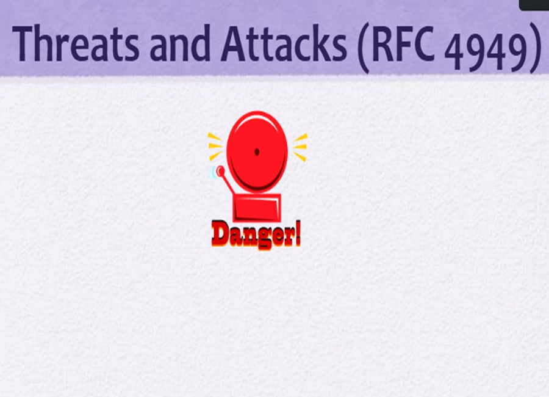
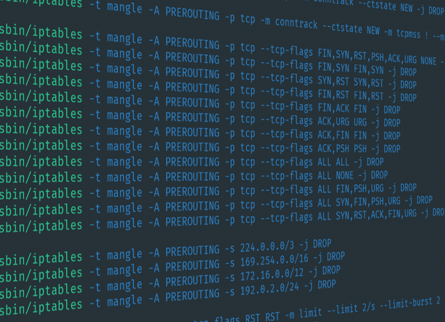
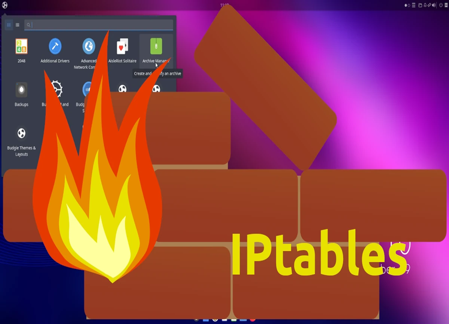
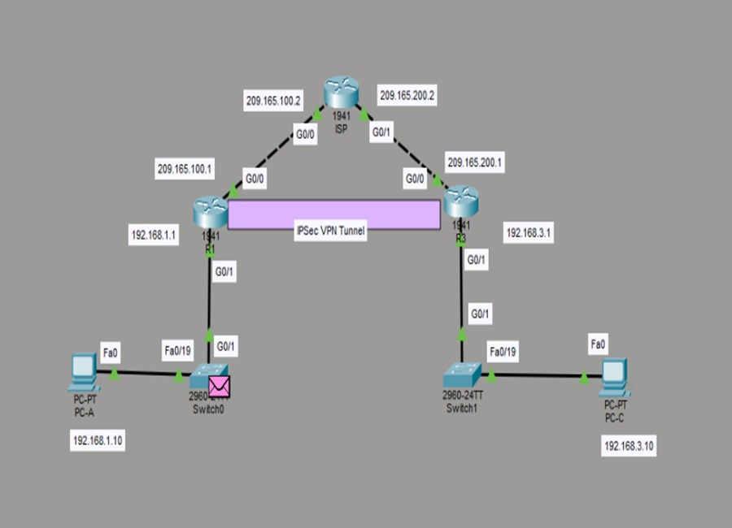
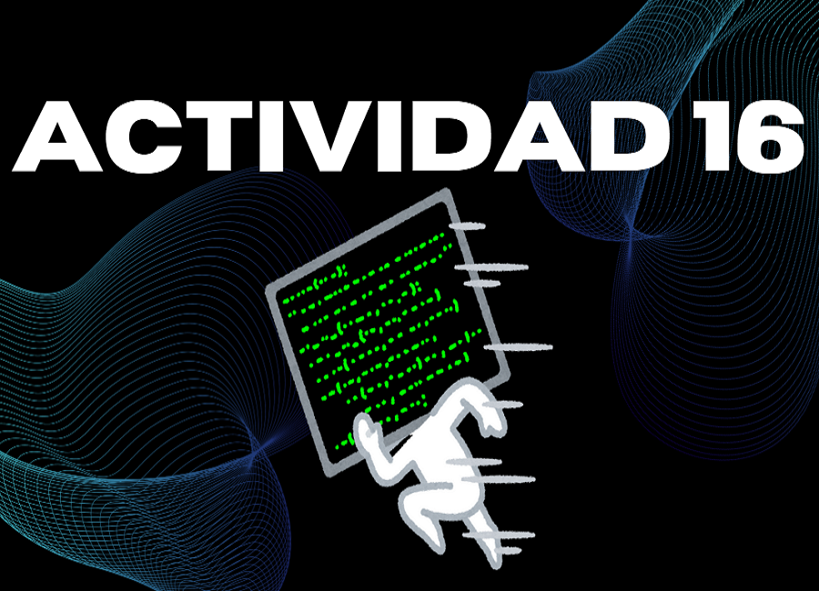
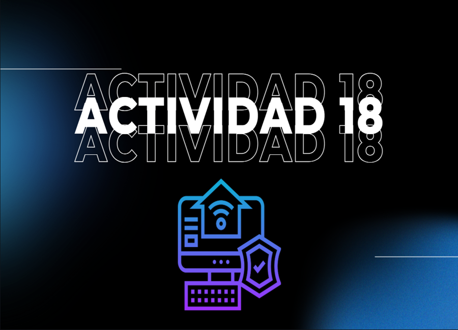
Proyectos
PR02: Análisis Comparativo de Plataformas de Simulación de Phishing
Investigación exhaustiva de las principales plataformas de simulación de phishing del mercado,
con análisis técnico detallado y evaluación ética de sus capacidades y características.
Fichas Descriptivas de Plataformas
Cofense
Descripción: Plataforma especializada en simulación de ataques de phishing
y entrenamiento de conciencia de seguridad.
Características Clave:
Simulaciones realistas de phishing
Reportes detallados de vulnerabilidades
Integración con email gateways
Análisis de comportamiento de usuarios
Enfoque: Educación y prevención de amenazas de phishing
Phished
Descripción: Solución integral para pruebas de seguridad y simulaciones de phishing
con enfoque en auditoría de seguridad.
Características Clave:
Campañas personalizables
Automatización de pruebas
Análisis de vulnerabilidades
Dashboard de resultados
Enfoque: Pruebas de penetración y auditoría
Ninjio
Descripción: Plataforma de capacitación en ciberseguridad con simulaciones
interactivas de phishing y cambio de comportamiento.
Características Clave:
Contenido de capacitación gamificado
Simulaciones de phishing integradas
Micro-aprendizajes interactivos
Seguimiento de progreso
Enfoque: Cambio de comportamiento y educación
Mimecast
Descripción: Solución empresarial de seguridad de email que incluye
funcionalidades de simulación de phishing.
Características Clave:
Protección avanzada contra phishing
Sandbox para análisis de malware
Simulaciones de ataques dirigidos
Integración con plataformas Microsoft
Enfoque: Seguridad corporativa de email
Infosec IQ
Descripción: Plataforma de conciencia de seguridad y cumplimiento normativo
con simulaciones de phishing integradas.
Características Clave:
Simulaciones de phishing realistas
Capacitación en cumplimiento
Métricas de mejora continua
Reportes de cumplimiento normativo
Enfoque: Conciencia y cumplimiento normativo
KnowBe4
Descripción: Líder en soluciones de capacitación en seguridad con
simulaciones avanzadas de phishing y análisis behavioral.
Características Clave:
Simulaciones sofisticadas de ataques
Inteligencia artificial en reportes
Integración con sistemas IT
Certificaciones de seguridad
Enfoque: Conciencia y educación continua
Tabla Técnica Comparativa
Plataforma
Tipo de Enfoque
Simulación Realista
Análisis Behavioral
Integración API
Cumplimiento Normativo
Escalabilidad
Cofense
Educación
Alta
Phished
Auditoría
Media
Ninjio
Capacitación
Alta
Mimecast
Seguridad Email
Muy Alta
Infosec IQ
Cumplimiento
Alta
KnowBe4
Educación
Muy Alta
Consideraciones Éticas
Responsabilidad y Consentimiento: Todas las simulaciones de phishing deben realizarse con el consentimiento informado y supervisión de la dirección. Los empleados deben ser informados que pueden ser sometidos a pruebas de seguridad.
Privacidad de Datos: La recopilación de datos sobre el comportamiento de los usuarios debe cumplir con regulaciones de protección de datos (GDPR, CCPA, etc.).
Propósito Educativo: Las simulaciones deben enfocarse en educación y mejora, no en castigo o disciplina de empleados.
Transparencia: Las organizaciones deben ser transparentes sobre sus programas de simulación de phishing y proporcionan recursos de apoyo a empleados.
Phishing Quiz Interactivo
Test de Phishing
Phishing Quiz Interactivo
Simulación educativa de ingeniería social: 10 escenarios reales, retroalimentación formativa e interactiva, ven y mide tus conocimientos en este quiz.
10
Escenarios
30 seg por preguntaRetroalimentación inmediataRanking de puntajesSin captura de datos reales
Módulo: SQL Injection - Inyección en Bases de Datos
Este módulo comprende un análisis integral de las vulnerabilidades de SQL Injection,
una de las técnicas de ataque más críticas y persistentes en aplicaciones web según el OWASP Top 10.
Se han completado 18 laboratorios prácticos progresivos utilizando la plataforma PortSwigger Web Security Academy
y la herramienta Burp Suite.
Áreas cubiertas: Manipulación de consultas SQL, extracción de datos, bypass de autenticación,
ataques In-band, Blind SQL Injection, técnicas Out-of-band, y mitigación mediante prepared statements.
18 Laboratorios Completados
Lab 1: WHERE Clause Injection
Manipulación de la cláusula WHERE para recuperar datos ocultos.
Inyección: category' OR 1=1--
Lab 2: Login Bypass
Evasión de mecanismos de autenticación.
Inyección: administrator'--
Lab 3: Oracle Version Detection
UNION-based SQLi para detectar versión de BD Oracle.
Payload: UNION SELECT BANNER, NULL FROM v$version--
Lab 4: MySQL Version Detection
Extracción de versión en MySQL/MS SQL.
Payload: UNION SELECT @@version, NULL#
Lab 5: Non-Oracle Schema Enumeration
Enumeración de esquemas en PostgreSQL.
Payload: UNION SELECT table_name FROM information_schema.tables--
Lab 6: Column Count Detection
Determinación del número de columnas retornadas.
Método: UNION SELECT NULL, NULL, NULL--
Lab 7: Cross-Table Data Retrieval
Extracción de datos de múltiples tablas.
Payload: UNION SELECT username, password FROM users--
Lab 8: Single Column Concatenation
Concatenación de múltiples valores en una sola columna.
Payload: UNION SELECT username||'~'||password FROM users--
Lab 9: Boolean-based Blind SQLi
Inferencia de datos mediante respuestas booleanas.
Técnica: Evaluación condicional de verdadero/falso
Lab 10: Conditional Errors SQLi
Extracción de datos mediante errores de tipo.
Payload: AND 1=CAST((SELECT username FROM users) AS int)--
Lab 11: Error-based SQLi
Explotación de mensajes de error detallados.
Técnica: Provocar errores intencionales para extraer información
Lab 12: Time-based Blind SQLi
Detección mediante retrasos en respuesta.
Payload: TrackingId=xyz'||pg_sleep(10)--
Lab 13: Out-of-Band Interaction
Comunicación externa mediante DNS o HTTP.
Herramienta: Burp Collaborator para detección
Lab 14: OOB Data Exfiltration
Extracción de datos fuera de banda.
Contraseña obtenida: 4rhedk3us1dw4dtown71
Lab 15: Brute Force Password Length
Determinación de longitud mediante fuerza bruta.
Resultado: Contraseña de 20 caracteres
Lab 16: Character-by-Character Extraction
Extracción progresiva de caracteres.
Herramienta: Burp Intruder (Cluster Bomb Attack)
Lab 17: Complete Password Recovery
Recuperación completa de credenciales.
Admin: 3c485d4edhilrpn6u9mh
Lab 18: Administrator Access
Acceso exitoso a cuenta de administrador.
Estatus: Lab Completado
Logros y Competencias Adquiridas
Dominio de técnicas de SQL Injection: In-band, Blind (Boolean, Time-based) y Out-of-band
Análisis de vulnerabilidades: Identificación y explotación de fallos en validación de entradas
Herramientas profesionales: Manejo avanzado de Burp Suite, Repeater, Intruder y Collaborator
Mitigación y defensa: Implementación de prepared statements y validación segura de datos
Metodología de pentesting: Abordaje estructurado en identificación y explotación de vulnerabilidades
Cumplimiento normativo: Referencia a estándares OWASP Top 10 y buenas prácticas de desarrollo seguro
Documento detallado con análisis teórico, procedimientos paso a paso y evidencia fotográfica de todos los laboratorios
Certificaciones
Registro formal de certificaciones obtenidas en el proceso de formación en ciberseguridad,
integrando evidencia verificable y reflexión profesional sobre cada trayecto de aprendizaje.
Certificado #1
Introducción a la Ciberseguridad
Cisco Networking Academy
Reseña del proceso de aprendizaje
El curso de Introducción a la Ciberseguridad de Cisco Networking Academy representó el punto de partida formal en mi proceso de formación dentro de este campo. A lo largo del programa, exploré los fundamentos conceptuales que sustentan la protección de sistemas digitales modernos, comprendiendo la naturaleza de las amenazas actuales y los mecanismos que organizaciones de todo tipo implementan para defenderse.
Uno de los aprendizajes más valiosos fue entender el rol del factor humano en la ciberseguridad: la mayoría de los incidentes no provienen de fallos técnicos, sino de errores humanos o manipulación social. Esta perspectiva me permitió repensar la seguridad no solo como un conjunto de herramientas, sino como una cultura organizacional. Exploré también los tipos de atacantes (hackers, actores estatales, cibercriminales), sus motivaciones y metodologías generales.
El módulo sobre carreras en ciberseguridad fue especialmente revelador: conocer roles como analista de SOC, pentester, respondedor de incidentes o especialista en cumplimiento normativo me ayudó a trazar un mapa más claro de hacia dónde puede llevarme este camino profesional. Salí del curso con una visión sistémica de cómo funciona el ecosistema de la seguridad informática, lo cual ha servido como base sólida para todos los aprendizajes posteriores del semestre.
El curso de Conceptos Básicos de Redes constituyó un pilar fundamental en mi formación técnica, ya que sin una comprensión sólida de la infraestructura de red no es posible abordar adecuadamente ningún dominio de la ciberseguridad. A través de este programa, adquirí el vocabulario técnico esencial y la comprensión estructural de cómo los datos viajan a través de redes locales y globales.
Profundicé en el modelo OSI y TCP/IP, entendiendo cómo cada capa tiene responsabilidades específicas y cómo los protocolos más comunes como HTTP, DNS, DHCP y ARP operan en contextos reales. Esta comprensión fue clave para entender posteriormente cómo se producen ataques a nivel de red, como el envenenamiento ARP, los ataques de intermediario o el sniffing de paquetes.
Aprendí también sobre segmentación de redes, subnetting, y el funcionamiento de los protocolos de enrutamiento. Estos conceptos me permitieron ver la red no solo como un medio de comunicación, sino como una superficie de ataque con puntos críticos que requieren protección activa. Este curso marcó el inicio de mi capacidad para leer y analizar topologías de red con criterio de seguridad.
El módulo de Dispositivos de Red y Configuración Inicial me introdujo al mundo del hardware de redes desde una perspectiva práctica y orientada a la seguridad. Más allá de conocer los componentes físicos como switches, routers y puntos de acceso inalámbrico, aprendí la importancia crítica de la configuración correcta como primera línea de defensa en cualquier infraestructura.
Uno de los aspectos más reveladores fue comprender que muchos incidentes de seguridad ocurren simplemente por configuraciones predeterminadas que nunca fueron modificadas: credenciales por defecto, puertos abiertos innecesariamente o servicios habilitados sin necesidad real. Aprendí a configurar dispositivos Cisco básicos mediante línea de comandos (CLI), incluyendo la asignación de contraseñas, configuración de interfaces y establecimiento de VLANs para segmentación.
Este conocimiento práctico conectó directamente con actividades del curso CNO V, donde la comprensión de la infraestructura de red es esencial para realizar pruebas de penetración responsables. Saber cómo está construida una red es tan importante como saber cómo atacarla éticamente o defenderla eficientemente. Considero este certificado una base operativa indispensable para cualquier profesional de la seguridad.
Este curso representó un salto cualitativo en mi comprensión del panorama de amenazas cibernéticas contemporáneo. A diferencia de módulos anteriores que abordaban conceptos fundacionales, aquí me adentré en la naturaleza táctica y estratégica de las amenazas persistentes avanzadas (APT), campañas de ransomware, ataques a infraestructura crítica y el ecosistema del cibercrimen organizado.
Aprendí a utilizar frameworks de inteligencia de amenazas como MITRE ATT&CK para mapear el comportamiento de adversarios reales, identificar tácticas, técnicas y procedimientos (TTPs) y correlacionar indicadores de compromiso (IOCs). Esta perspectiva estructurada transforma el análisis de incidentes de una actividad reactiva a un proceso sistemático y reproducible.
El módulo también cubrió el funcionamiento de los centros de operaciones de seguridad (SOC), los flujos de trabajo de respuesta a incidentes y la importancia del intercambio de inteligencia entre organizaciones. Comprender cómo los analistas profesionales procesan alertas, priorizan incidentes y coordinan respuestas me dio una visión concreta del trabajo diario en ciberseguridad, reforzando mi motivación para especializarme en este campo.
El curso de Hacker Ético representa el módulo que más directamente se alinea con las actividades prácticas del semestre en CNO V y con mi vocación dentro de la ciberseguridad ofensiva responsable. Aquí profundicé en la metodología formal del hacking ético: desde el reconocimiento y la enumeración hasta la explotación controlada y la elaboración de reportes profesionales de vulnerabilidades.
Aprendí el marco legal y ético que delimita el trabajo de un pentester, comprendiendo la diferencia fundamental entre actuar con autorización explícita dentro de un alcance definido y realizar actividades maliciosas. Estudié metodologías reconocidas como PTES, OWASP y OSSTMM, herramientas como Nmap, Metasploit, Burp Suite y técnicas de escalada de privilegios, movimiento lateral y post-explotación.
Este certificado sintetiza el espíritu de todo el curso CNO V: pensar como un atacante para defender mejor. Las habilidades adquiridas las he aplicado directamente en laboratorios como el análisis de la máquina VulnHub Napping 1.0.1, donde documenté una cadena completa de ataque que incluyó Reverse Tab Napping, robo de credenciales, reutilización de SSH y escalada de privilegios mediante GTFOBins. Considero el hacking ético no solo una disciplina técnica, sino un ejercicio de responsabilidad profesional.
El proposito de este portafolio se basa en el orden de las evidencias de las actividades que se han presentado a lo largo del semestre. El enfoque que se tiene en el curso, es tener el conocimiento y procedimento necesario correcto para proceder de la manera adecuada ante cualquier contingencia sobre la seguridad informática actual.
Es importante el uso de este portafolio como evidencia del proceso de aprendizaje para marcar los conocimientos adquiridos y reforzar lo ya aprendido. El proposito de este portafolio se basa en el orden de las evidencias de las actividades que se han presentado a lo largo del semestre.
ACTIVIDAD 01 -Análisis en grupo de un ciberataque real y su impacto empresarial
Por: Pablo de Jesús Salazar Hernández - 25/01/2026
En esta actividad se analiza el ciberataque que sufrió Petróleos Mexicanos en 2019. Examinando las causas del incidente, su impacto financiero, operativo y reputacional, así como las acciones de respuesta implementadas. Finalmente, se tomaron en cuenta que medidas de mejora son las adecuadas para fortalecer la ciberseguridad empresarial general.
Introducción
La seguridad informática no es algo que normalmente sea comúnmente practicada o
hablada entre la gente en sus vidas diarias, se tiene pensado que al tener ciertos tipos
de dispositivos o software que de uso diario tengan algún tipo de protección, de cierta
manera la gente podría sentirse segura, sin embargo, estos dispositivos o software de
uso común como navegadores web o aplicaciones de uso diario no son suficientes para
repeler algún tipo de ciberataque que usualmente pasan de maneras inesperadas,
provocando daños costosos que requieren tiempo para arreglar varios problemas que
estos mismos dejan a su paso.
Pensando en las grandes empresas, hay ciertas áreas las cuales pueden ser atacadas
con regularidad debido a ciertos caracteres que se toman, como lo podrían ser correos,
llamadas, mensajería instantánea, tomando en cuenta que el ser humano es el eslabón
más débil en la seguridad informática, es usual que no se le ponga mucha atención a
estas áreas vulnerables donde un ciberataque puede ser faltan en una empresa.
En esta actividad hablaremos de un caso en específico el cual, se mostrará los daños
reales que se podrían estimar en un ciberataque exitoso en una empresa real la cual, no
tuvo los cuidados suficientes para repeler un ataque de este tipo.
Condiciones de ciberseguridad prevías: PEMEX tenía madurez baja; sin EDR robusto,
segmentación network débil (RDP/SMB expuestos), políticas laxas de macros VBA y
falta de monitoreo de tráfico C2/observables (e.g., puertos 80/443/FTP). No hay
evidencia de backups offline efectivos o respuesta IR madura pre-ataque.
Factores que facilitaron el ataque:
-Error humano: Empleados habilitaron macros VBA en spearphishing y/o cayeron en
FakeUpdates (ingeniería social vía emails/documentos “internos”).
-Tecnica: LOLBins no bloqueados, credenciales débiles en LSASS, AV bypass fácil.
-Politica: Ausencia de MFA en RDP/SMB, sin refuerzo en macro disabling, OSINT
expuesto (Linkedln/emails públicos) para targeting preciso.
Esto creó una puerta abierta para 60 días de intrusión sigilosa.
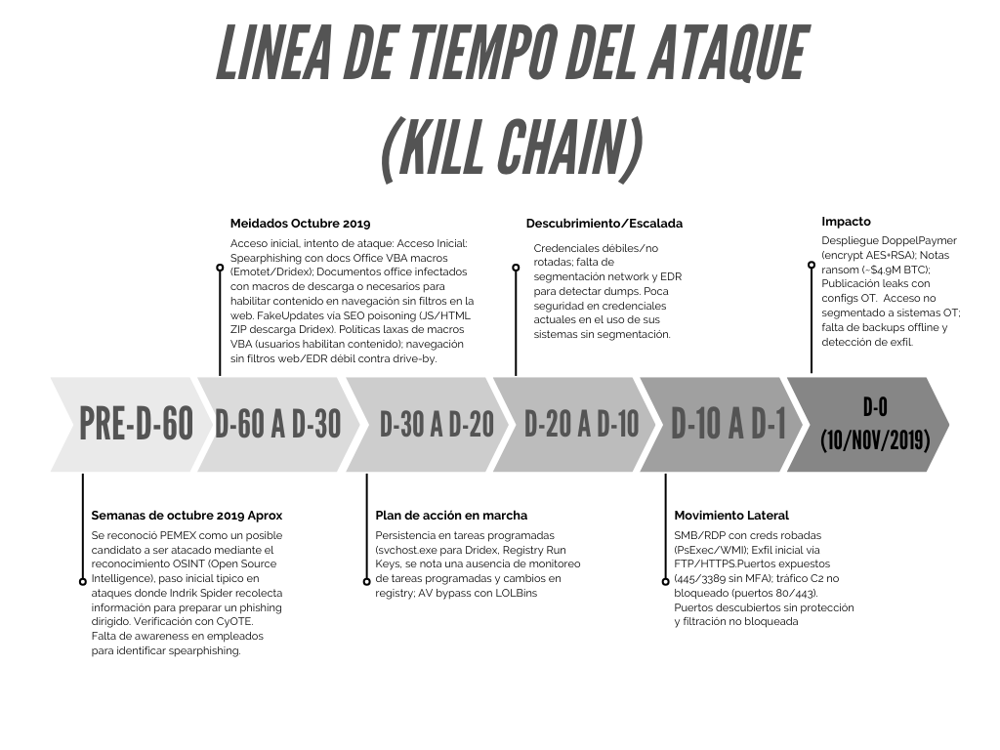
PEMEX, la petrolera estatal mexicana, sufrió un ataque de ransomware el 10 de
noviembre de 2019 (D-0), detectado tras la ejecución del malware que mostró notas de
rescate demandando 565 BTC (unos $4.9 millones USD entonces). Aunque PEMEX
afirmó que operaciones y producción no se vieron afectadas, empleados perdieron
acceso a sistemas por días, y datos robados (incluyendo info OT) se publicaron en
sitios de leaks.
Los atacantes usaron spearphishing como vector principal para el acceso inicial en el
caso PEMEX, entregando malware como Emotet o Dridex vía adjuntos maliciosos que
requerían habilitar macros VBA en documentos de Office. FakeUpdates era un método
alternativo ingenioso vía SEO poisoning, donde un empleado buscaba algo relacionado
y caía en un sitio falso de "actualización de browser" que descargaba Dridex.
Tabla técnica del ataque
Elemento
Descripción
Tipo de Ataque
Ransomware, cifrado de equipos y exigencia de rescate en criptomonedas
Actor o grupo atacante
Presuntos cibercriminales vinculados a grupos como DoppelPaymer
Menos del 5% de los equipos
corporativos, afectando principalmente
sistemas administrativos y de logística
Duración del incidente
Ataque detectado el 10 de noviembre de
2019; los atacantes dieron un plazo de 48
horas para pagar el rescate
Mecanismos de detección y respuesta
- Comunicado oficial de Pemex
confirmando el ataque
- Intervención de equipos internos de TI para aislar sistemas
- Decisión de no pagar el rescate
- Restauración de sistemas afectados mediante respaldos y limpieza manual
Evaluación del impacto
Principio
Descripción del impacto
Evidencia del caso
Confidencialidad
Exfiltración de información
interna previa o simultánea al
cifrado, como parte de una
estrategia de doble extorsión
característica de
DoppelPaymer.
Amenazas públicas de
divulgación de datos y posterior
filtración de documentos internos
de PEMEX en plataformas
asociadas a los atacantes.
Integridad
Alteración no autorizada de la
información mediante cifrado
malicioso, impidiendo el uso
normal de archivos y
sistemas, sin evidencia
pública de modificación
intencional del contenido.
Sistemas administrativos y
equipos corporativos cifrados,
con pérdida de acceso a datos y
aplicaciones críticas.
Disponibilidad
Interrupción parcial de la
disponibilidad de servicios
administrativos debido a la
inoperatividad de equipos y
sistemas afectados por el
ransomware.
Afectación aproximada del 5 %
de los equipos de cómputo y
suspensión temporal de
procesos como facturación y
pagos, sin impacto directo en la
producción industrial.
Cálculo del costo total del ciberataque (MXN)
Tipo de costo
Descripción
Estimación USD
Estimación MXN 1USD=19.26 MXN (Banxico)
Argumentación
% del Presupuesto Anual de TI
Comparativa con el Sector Energético/Gobierno
Pérdidas Operativas
Días de inactividad, cancelación de operaciones o servicios
$12,000,000
$231,120,000 MXN
Días de parálisis en facturación y logística administrativa.
~25%
Equivale a una
cuarta parte
del
presupuesto
operativo
anual de
ciberseguridad
de una
paraestatal
grande.
Daños
Reputacion
ales
Pérdida de
clientes,
caída en el
valor de
acciones,
pérdida de
confianza
$5,000,0
00
$96,300,0
00 MXN
Pérdida de
confianza y
filtración
de datos
en la Deep
Web.
~10%
Supera el
costo de
cualquier
campaña
nacional de
confianza
digital
programada
para ese año.
Costos
Técnicos
Recuperaci
ón de
sistemas,
consultorías
externas,
reemplazo
de equipos
$3,500,0
00
$67,410,0
00 MXN
Limpieza
de 10,000
terminales
y
restauració
n de
backups.
~7%
Es equivalente
al costo de
renovar
licencias
críticas para
toda la
infraestructura
central de
Pemex.
Costos
Legales /
Regulatori
os
Multas,
demandas o
sanciones
por
incumplimie
nto
(GDPR,
ISO, etc.).
$500,00
0
$9,630,00
0 MXN
Auditorías
externas y
cumplimie
nto
normativo
postataque.
~1%
Impacto menor
en
presupuesto,
pero alto en
auditorías
externas
obligatorias
por la ASF.
Pago de
Rescate o
Extorsión
En caso de
ransomware
, monto
pagado o
solicitado
$4,900,0
00
$94,374,0
00 MXN
Monto
solicitado
por los
atacantes
(565 BTC).
~10%
El rescate
solicitado
representaba
el 10% del
fondo de
8
emergencia
para
contingencias
tecnológicas.
Inversión
en
seguridad
Inversión
realizada
por la
empresa
posterior al
ataque, con
el fin de
fortalecer
vulnerabilid
ades.
$15,000,
000
$288,900,
000
Actualizaci
ón de
licencias,
segmentac
ión de
redes y
capacitació
n.
~31%
Inversión
reactiva: Casi
un tercio del
presupuesto
anual se tuvo
que redirigir a
modernización
forzada.
TOTAL
ESTIMADO
Suma total
en pesos
mexicanos
(MXN)
$40,900,
000
$787,734,
000
Impacto
económico
total
incluyendo
la
moderniza
ción.
~84%
El ataque
consumió casi
la totalidad del
presupuesto
anual
estimado de
ciberseguridad
del sector.
ACTIVIDAD 02 - Análisis de servicios de seguridad (X.800 y RFC 4949)
Por: Pablo de Jesús Salazar Hernández - 27/01/2026
En esta actividad analizamos los servicios de seguridad definidos en X.800 y en RFC 4949, identificando sus principales conceptos y su aplicación en entornos empresariales. Evaluamos cómo estos marcos contribuyen a garantizar la confidencialidad, integridad, autenticación y control de acceso en los sistemas de información.
Introducción
La seguridad de la información es un pilar fundamental en el mundo digital actual. Para
garantizarla, se han desarrollado estándares y marcos conceptuales que permiten definir,
organizar y aplicar medidas de protección de manera coherente y universal. Entre los más
relevantes se encuentran la Recomendación X.800 de la UIT-T y el RFC 4949 de la IETF, ambos
documentos que, aunque surgieron en contextos distintos, comparten el objetivo de establecer un
lenguaje común y una estructura sólida para abordar la seguridad informática.
Desarrollo
Escenario 01. En múltiples incidentes atribuidos al grupo LockBit, organizaciones públicas y
privadas han sufrido el cifrado masivo de servidores tras un acceso inicial no autorizado. Antes de
ejecutar el ransomware, los atacantes exfiltraron información sensible y posteriormente
amenazaron con su publicación, evidenciando un compromiso simultáneo de la confidencialidad,
la integridad y la disponibilidad. Desde el enfoque del RFC 4949, el incidente se clasifica como un
multi-stage attack con data breach y availability attack, donde la indisponibilidad del sistema es
solo una fase final del daño. La ausencia de respaldos inmutables y de detección temprana
permitió que el impacto fuera total.
Elemento
Respuesta
Servicios X.800 Comprometidos
Integridad, confidencialidad de los datos, disponibilidad
Definición(es) aplicable(s) RFC
4949.
Multi-stage attack: Ataque multiple en distintos lugares
data breach: brecha de información y availability attack
Tipos de amenaza
Externa (Acceso inicial no autorizado)
Vector de ataque
Ausencia de respaldos inmutables, sin detección temprana
Impacto técnico / operativo
Perdida total de información crucial, filtración de información sensible.
Medida de control recomendada
MFA robusto, sistema de alertas de acceso, respaldos disponibles.
Escenario 02. En diversos casos documentados, bases de datos completas quedaron accesibles
públicamente debido a errores de configuración en servicios de almacenamiento en la nube. No
existió una explotación técnica sofisticada, sino una falla en el control de acceso, lo que derivó
directamente en la pérdida de confidencialidad de los datos. El RFC 4949 describe este tipo de
incidentes como misconfiguration y exposure, subrayando que la amenaza no siempre implica
malware o intrusión activa. El impacto suele ser legal y reputacional, aun cuando no se pueda
demostrar acceso malicioso.
Elemento
Respuesta
Servicios X.800 Comprometidos
Control de acceso, confidencialidad de datos
Definición(es) aplicable(s) RFC
4949.
Misconfiguration: falta de configuración correcta para su
uso enfocado
Exposure: exposición de los datos sensibles públicamente
faltando a la privasidad
Tipos de amenaza
Interna (fallo en la configuración de almacenamiento de
datos en sus servicios)
Vector de ataque
Sin intrusiones activas, solo malas configuraciones
Impacto técnico / operativo
Legal y reputacional
Medida de control recomendada
Validación temprana de controles de acceso,
disponibilidad de servicios confiables
Escenario 03. Un proveedor legítimo de software fue comprometido y distribuyó una actualización
que incluía código malicioso, afectando a cientos de organizaciones que confiaban en él. Este
escenario refleja una violación grave de la integridad de los sistemas y, en muchos casos, de la
confidencialidad, al permitir accesos no autorizados posteriores. El RFC 4949 lo identifica como
supply chain attack, destacando el abuso de relaciones de confianza. El daño es particularmente
crítico porque rompe el supuesto de legitimidad del software firmado.
Elemento
Respuesta
Servicios X.800 Comprometidos
Integridad de datos, confidencialidad de los datos
Definición(es) aplicable(s) RFC
4949.
Supplay chain attack: Ataque a agentes asociados a un servicio usando la gente confiable como una cadena de conexión rígida
Tipos de amenaza
Externa (Distribución de FakeUpdates en diversas organizaciones)
Vector de ataque
Compromiso de actualizaciones legitimas, impacto social de legitimidad
Impacto técnico / operativo
Legal y reputacional
Medida de control recomendada
Control de acceso de credenciales, MFA robusto, identificador de tareas, avisos previos de acceso, doble confirmación interna para la distribución de software
Escenario 04. Mediante campañas de phishing, atacantes obtuvieron credenciales válidas y accedieron a sistemas corporativos durante meses sin levantar alertas. Aunque la autenticación funcionó técnicamente, el servicio de autenticación fue comprometido al basarse en credenciales robadas, afectando también el control de acceso. Según el RFC 4949, se trata de un credential compromise con authentication failure conceptual, no técnica. La falta de MFA y de monitoreo de comportamiento facilitó la persistencia del atacante
Elemento
Respuesta
Servicios X.800 Comprometidos
Autenticación, control de acceso
Definición(es) aplicable(s) RFC
4949.
Credential compromise con authentication failure conceptual: Comprometer las credenciales validas mediante sistemas operativos, fallando el sistema de autenticación por ser credenciales validas.
Tipos de amenaza
Externa (Robo de credenciales validas)
Vector de ataque
Compromiso de credenciales validas, falta de capacitación a personal sobre los posibles riesgos en correos electronicos
Impacto técnico / operativo
Perdida de control total para acceder, perdida de información sensible.
Medida de control recomendada
MFA Robusto, monitoreo de comportamiento avanzado
Escenario 05. En ataques de ransomware avanzados, los atacantes eliminaron o cifraron los respaldos antes de afectar los sistemas productivos. Este hecho compromete directamente la disponibilidad y la integridad de la información, al impedir la recuperación. El RFC 4949 clasifica este comportamiento como data destruction y availability attack, evidenciando intención deliberada de maximizar el daño. La inexistencia de respaldos offline o inmutables convierte el incidente en catastrófico
Elemento
Respuesta
Servicios X.800 Comprometidos
Disponibilidad, integridad de datos.
Definición(es) aplicable(s) RFC
4949.
Data destruction: cifrado o eliminación de datos importantes. availability attack: ataque o cifrado de respaldos.
Tipos de amenaza
Externa (Intrusión a bases de datos)
Vector de ataque
Filtración en acceso a bases de datos, falta de confirmación de control de acceso
Impacto técnico / operativo
Imposibilidad de recuperar información perdida de información sensible.
Medida de control recomendada
MFA Robusto, monitoreo de comportamiento avanzado
Escenario 06. Un empleado con acceso legítimo extrajo bases de datos completas y las vendió a terceros, sin explotar vulnerabilidades técnicas. El servicio afectado fue principalmente la confidencialidad, junto con fallas en el control de acceso por exceso de privilegios. El RFC 4949 define este escenario como insider threat, destacando que el riesgo interno puede ser tan grave como el externo. La carencia de monitoreo y de políticas de mínimo privilegio fue determinante.
Elemento
Respuesta
Servicios X.800 Comprometidos
Confidencialidad, control de acceso
Definición(es) aplicable(s) RFC
4949.
Insider threat: peligro interno, personal con accesos a información sensible.
Tipos de amenaza
Interno
Vector de ataque
Privilegios de acceso, datos vulnerados
Impacto técnico / operativo
Bases de datos extraidas y vulneradas, acceso a terceros.
Medida de control recomendada
Monitoreo constante, políticas de privilegio
Escenario 07. Tras un ataque, los registros del sistema quedaron cifrados o alterados, impidiendo reconstruir la secuencia de eventos. Esto compromete la integridad de los datos y el no repudio, ya que no es posible demostrar qué ocurrió ni quién fue responsable. Desde el RFC 4949, se trata de una violación de evidentiary integrity y del audit trail. El impacto no solo es técnico, sino también probatorio y legal.
Elemento
Respuesta
Servicios X.800 Comprometidos
Integridad de los datos, no repudio.
Definición(es) aplicable(s) RFC
4949.
Evidentiary integrity: integridad de los archivos alterados o cifrados. Audit Trail: Imposibilidad de poder demostrar que ocurrió ni quien fue el responsable.
Tipos de amenaza
Externo
Vector de ataque
Registros de sistema cifrados o alterados
Impacto técnico / operativo
Probatorio y legal, técnico
Medida de control recomendada
Monitoreo constante, políticas de privilegio
Escenario 08. Una actualización mal ejecutada provocó la caída simultánea de múltiples servicios críticos a nivel global. Aunque no existió un atacante, el servicio de disponibilidad fue gravemente afectado. El RFC 4949 contempla estos eventos como operational failure, recordando que la seguridad también se ve afectada por errores internos. La falta de pruebas previas y planes de reversión amplificó el impacto.
Elemento
Respuesta
Servicios X.800 Comprometidos
Integridad de los datos, no repudio.
Definición(es) aplicable(s) RFC
4949.
Evidentiary integrity: integridad de los servicios usados a nivel global operational failure: falla operacional de los servicios
Tipos de amenaza
Externo
Vector de ataque
Registros de sistema cifrados o alterados
Impacto técnico / operativo
Probatorio y legal, técnico
Medida de control recomendada
Monitoreo constante, políticas de privilegio
Escenario 09. Atacantes replicaron sitios y correos oficiales para engañar a ciudadanos y obtener información sensible. Este escenario afecta la autenticación, al suplantar identidades legítimas, y la confidencialidad de los datos recolectados. El RFC 4949 lo clasifica como masquerade y phishing, subrayando el componente de ingeniería social. La ausencia de mecanismos de autenticación del dominio y de concientización facilitó el éxito del ataque.
Elemento
Respuesta
Servicios X.800 Comprometidos
Autenticación, confidencialidad
Definición(es) aplicable(s) RFC
4949.
Masquerade, phishing
Tipos de amenaza
Externo
Vector de ataque
Suplantado de identidades legítimas e información sensible.
Impacto técnico / operativo
Brecha de información de usuarios.
Medida de control recomendada
Mecanismos de autenticación del dominio y concientización.
Escenario 10. En algunos incidentes, tras exfiltrar información, los atacantes ejecutaron acciones destructivas para borrar sistemas completos y eliminar rastros. Se produce un compromiso total de la confidencialidad, la integridad y la disponibilidad, configurando uno de los peores escenarios posibles. El RFC 4949 describe este patrón como destructive attack, donde el objetivo no es solo el lucro, sino el daño irreversible. La detección tardía impidió cualquier contención efectiva.
Elemento
Respuesta
Servicios X.800 Comprometidos
Confidencialidad, Integridad, disponibilidad
Definición(es) aplicable(s) RFC
4949.
Destructive attack
Tipos de amenaza
Interno
Vector de ataque
Información sensible
Impacto técnico / operativo
Sistemas de bases de datos
Medida de control recomendada
Medidas de detección tempranas.
ACTIVIDAD 03 - Interpretación y traducción de políticas de filtrado en iptables
Por: Pablo de Jesús Salazar Hernández - 03/02/2026
En esta sección se presentan evidencias correspondientes a la actividad 03 de la unidad de Seguridad Informática.
Las imágenes muestran el desarrollo de ejercicios relacionados con la interpretación del flujo de paquetes en iptables, la identificación de tablas y cadenas, así como la construcción y análisis de reglas de filtrado utilizando distintos parámetros como puertos, estados de conexión e interfaces de red.
Estas evidencias permiten comprender la aplicación práctica de reglas de firewall en sistemas Linux y la importancia del filtrado adecuado para la protección de servicios de red.
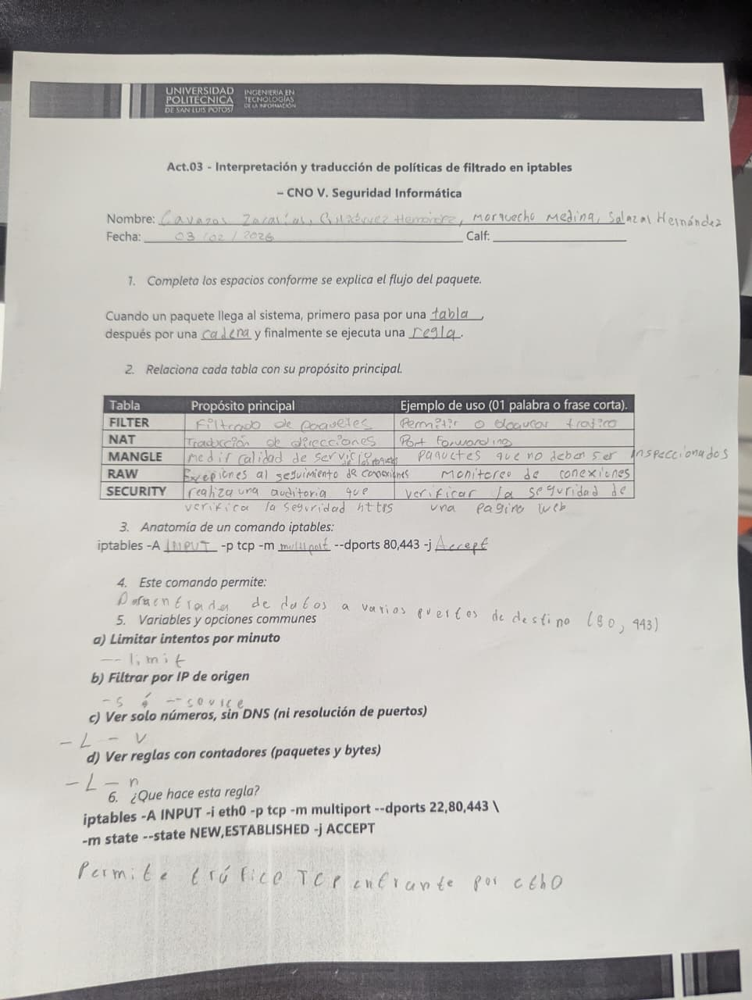
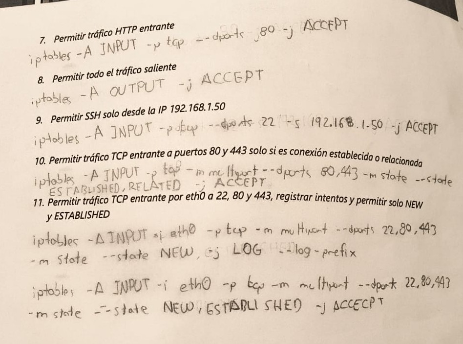
ACTIVIDAD 04 - Mecanismos de defensa en red
Por: Pablo de Jesús Salazar Hernández - 04/02/2026
Introducción
Con esta actividad veremos reglas de firewall que deberemos de aplicar para cumplir ciertas reglas
que necesitamos por llevar cierta seguridad específica, es notable que muchas de ellas sean
necesarias en la vida real para múltiples entradas o salidas de información:
1. Establecer una política restrictiva.
Iptable -p input drop
2. Permitir el tráfico de conexiones ya establecidas.
Iptable -a INPUT -m state –state ESTABLISHED,RELATED -j ACCEPT
3. Aceptar tráfico DNS (TCP) saliente de la red local.
Iptable -a FOWARD -s 192.168.1.0/24 -p tcp –dport 53 -m state –state new -j accept
4. Aceptar correo entrante proveniente de Internet en el servidor de correo.
Iptable -a foward -d 192.1.2.10 -p tcp –dport 25 -state –state new -j accept
5. Permitir correo saliente a Internet desde el servidor de correo.
Iptable -a foward -s 192.1.2.10 -p tcp –dport 25 -state –state new -j accept
6. Aceptar conexiones HTTP desde Internet a nuestro servidor web.
Iptable -a foward -d 192.1.2.11 -p tcp –dport 80 -m state –state new -j accept
7. Permitir tráfico HTTP desde la red local a Internet.
Iptable -a foward -s 192.1.2.0/24 -p tcp –dport 80 -m state –state new -j accept
Conclusión
Las reglas de firewall tienden a ser de importancia para poder manegar cierta entrada de datos al
igual que la salida de los mismos y su origen o incluso su envío, es posible que sea más complejo
de lo que parece pero suele ser de vital importancia para añadir esa capa de seguridad que se
necesita en un servidor.
ACTIVIDAD 05 - Cartografiando el pentesting: análisis comparativo de metodologías de seguridad informática
En esta actividad analizamos y comparamos distintas metodologías de pruebas de penetración como OWASP Testing Guide, PTES y OSSTMM. Identificamos sus fases, enfoques y alcances, evaluando sus diferencias y aplicaciones en distintos contextos de seguridad informática.
Metodología
Descripción
Fases de implementación
Objetivo principal
Escenarios de utilidad
Orientación
Autores u organismos
URL del material oficial
Existencia de certificaciones asociadas
Versiones o actualizaciones vigentes
MTRE ATT&CK
Marco deconocimiento que documenta tácticas y técnicas usadas por atacantes reales
Reconocimiento, Ejecución, Persistencia, Escalada de privilegios, Defensa evasiva, etc. (basado en tácticas).
Analizar y mejorar la detección y respuesta ante amenazas.
Threat hunting, análisis de malware, red team/blue team, SOC.
MITRE. (s. f.). MITRE ATT&CK® knowledge base. https://attack.mitre.org/
OWASP. (s. f.). OWASP Web Security Testing Guide (WSTG). https://owasp.org/www-project-web-security-testing-guide/
National Institute of Standards and Technology. (2008). Technical guide to information security testing and assessment (Special Publication
800-115). U.S. Department of Commerce. https://csrc.nist.gov/publications/detail/sp/800-115/final
Penetration Testing Execution Standard. (s. f.). PTES technical guidelines. http://www.pentest-standard.org
Open Information Systems Security Group. (s. f.). Information Systems Security Assessment Framework (ISSAF). http://www.oissg.org/issaf
ACTIVIDAD 06 - Implementación de IPSec VPN
En esta actividad configuramos y analizamos una VPN basada en IPsec, comprendiendo sus componentes, modos de operación y protocolos asociados. Evaluamos cómo garantiza la confidencialidad, integridad y autenticación en la comunicación segura entre redes o dispositivos remotos.
1. configuración inicial
Se configuraron los parámetros básicos de los routers (hostname, direcciones IP en
interfaces LAN y WAN, rutas estáticas o por defecto y activación de interfaces). Esto
permitió la conectividad entre las redes antes de implementar la VPN.
2. Licencia de seguridad habilitada
Se habilitó la licencia de seguridad (Security/K9) en los routers para permitir el uso de
funciones criptográficas necesarias para configurar IPSec VPN.
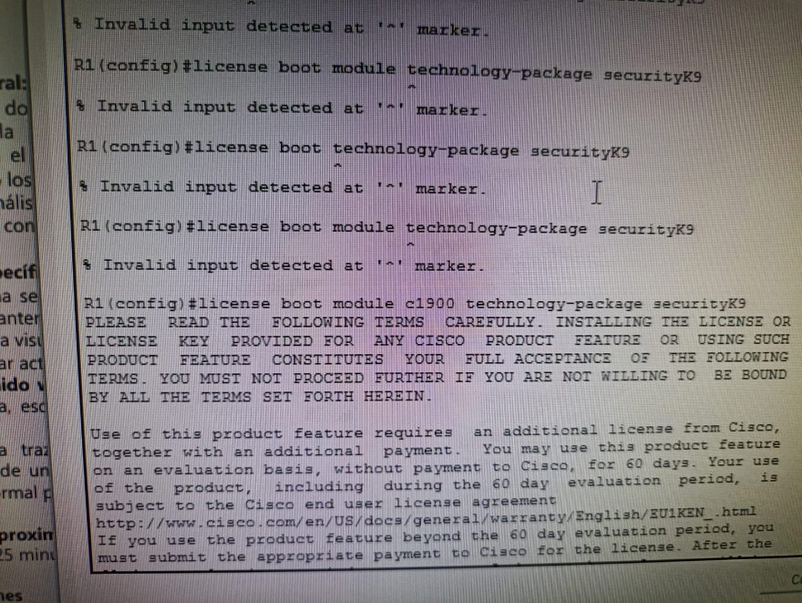
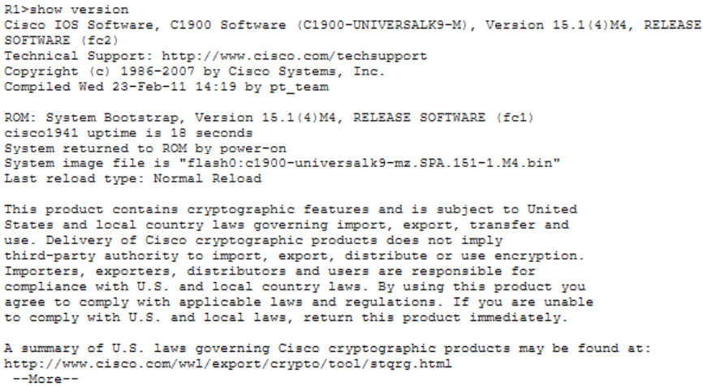
3. Implementación de ACL
Se creó una lista de control de acceso (ACL) extendida para definir el tráfico interesante que será cifrado. Esta ACL permite el tráfico entre la red 192.168.1.0/24 y 192.168.3.0/24.
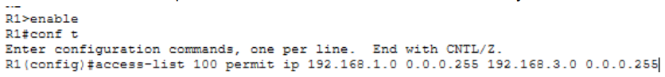
4. Phase 01: ISAKMP policy
Se configuró la política ISAKMP para establecer el canal seguro inicial. Se definieron
parámetros como el método de autenticación (pre-shared key), algoritmo de encriptación,
hash y grupo Diffie-Hellman.
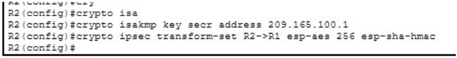
5. Phase 02: IPSec transform-set
Se creó el transform-set para definir cómo se protegerán los datos, especificando el
protocolo de cifrado (AES) y el algoritmo de integridad.
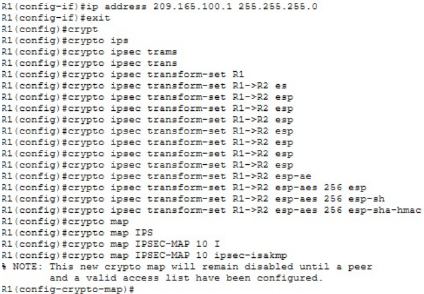
6. Crear el mapa criptográfico
Se configuró el crypto map asociando la ACL, el peer remoto (IP pública del otro router) y el
transform-set. Esto une todos los parámetros de seguridad definidos previamente.
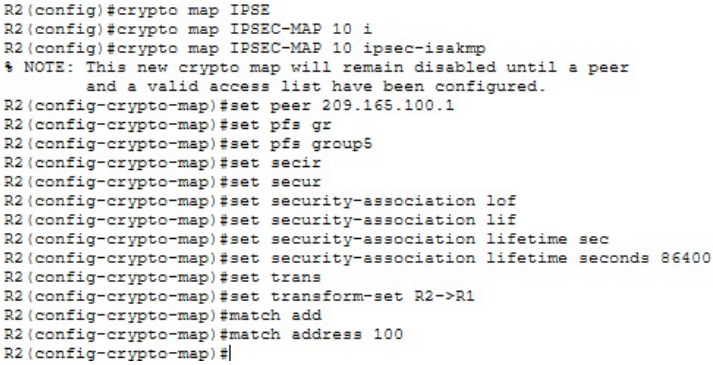
7. Aplicar el mapa criptográfico
Finalmente, el crypto map se aplicó a la interfaz WAN del router (G0/0). Esto activa el túnel
IPSec para el tráfico que coincida con la ACL.
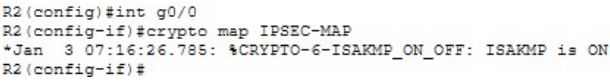
Act 16: Dilemas éticos en ciberseguridad Carrera:ITI
Por: Pablo de Jesús Salazar Hernández y el Equipo 4- 06/05/2026
Escenario No. 1 – Acceso no autorizado interno
Trabajas en el área de ciberseguridad de tu empresa. Durante una revisión de logs detectas que un compañero accedió
a correos privados del director general sin autorización. El compañero argumenta que lo hizo para “detectar posibles fugas de información”.
1. ¿Cuál es el dilema ético?: Compañero del área usa de forma poco profesional sus
privilegios en la empresa invadiendo espacios personales informáticos como lo es en
este caso, el correo del director general de la empresa. Aunque sea un fin parecido
legítimo, el medio que utilizo el empleado representa un abuso de privilegios que
compromete la confianza institucional y los derechos individuales dentro de la
organización.
2. ¿Qué harías tu como especialista?: Al ser un problema interno del área directamente con
el personal autorizado sin haber realizado algún acto delictivo con la privacidad del
personal involucrado, se levantaría un acta administrativa correspondiente al acto
realizado, capacitación sobre el acuerdo de confidencialidad y la prohibición directa a
estos accesos sin la autorización previa del personal a ser revisado.
3. Justifica tu decisión desde:
• Ética utilitarista: Mediante la prohibición de un acto similar a este, al igual de
demostrar las represarías como primera advertencia de sus actos, promueve la
confianza del personal de la empresa, procurando la seguridad general en base al
buen uso de los privilegios del personal del área.
• Enfoque de hechos: Independientemente de las intenciones, el hecho concreto es
que el compañero accedió a correos privados sin una orden formal, sin
autorización del afectado y fuera de cualquier procedimiento de auditoría
establecido. Los hechos no cambian por la motivación: hubo un acceso no
autorizado documentado en los logs, lo que constituye una violación objetiva de
los protocolos de seguridad internos.
• Enfoque del bien común: Permitir que el personal técnico acceda a información
privada de otros empleados, incluso directivos, bajo justificaciones personales
sin respaldo institucional, erosiona la confianza colectiva en el área de
ciberseguridad y en la empresa en general. El bien común se preserva
garantizando que los accesos a información sensible siempre sigan canales
formales y auditables, beneficiando a toda la organización.
4. ¿Qué mandamientos de ética informática se están violando o respetando?:
Mandamientos violados:
• Mandamiento 3: "No fisgonees en los archivos informáticos de otras personas."
accedió a correos privados sin autorización.
• Mandamiento 7: "No uses los recursos informáticos de otras personas sin
autorización." utilizó sus privilegios para acceder a recursos fuera de su alcance
permitido.
• Mandamiento 10: "Siempre debes usar la computadora de manera que muestres
consideración y respeto hacia tus compañeros." violó la privacidad del director.
Mandamientos respetados
• Mandamiento 9: En su intención original, el compañero afirmó pensar en las
consecuencias para la empresa, aunque el método fue inapropiado.
5. Clasifica el tipo de delito:
• Delito informático.
• Delito asistido por computadora.
• Delito incidental.
El sistema informático (correo corporativo) fue el objetivo directo del acceso no autorizado. En
México, esto puede encuadrarse en el Artículo 211 bis del Código Penal Federal, que sanciona el
acceso sin autorización a sistemas de cómputo protegidos.
Escenario No. 2 – Vulnerabilidad critica no reportada
Durante un pentest encuentras una vulnerabilidad crítica en un sistema financiero que permite
extraer dinero. El cliente aún no ha firmado el contrato final y tú sabes que podrías explotarla sin
ser detectado.
1. ¿Cuál es el dilema ético?: El dilema ético se presenta entre la oportunidad técnica de
explotar una vulnerabilidad crítica para obtener un beneficio personal, facilitada por el
hecho de que el contrato aún no está firmado, generando una aparente zona gris legal, y
la responsabilidad ética del especialista de actuar con integridad, reportar el hallazgo y
no causar daño. La tensión está entre el beneficio individual inmediato y el deber
profesional hacia el cliente, los usuarios del sistema y la comunidad.
2. ¿Qué harías tu como especialista?: Reportaría la vulnerabilidad al cliente de forma
inmediata y documentada, independientemente del estado del contrato. El acceso al
sistema se otorgó con un propósito específico (pruebas de penetración), por lo que
cualquier acción fuera de ese alcance constituiría un uso no autorizado. Notificaría
también a mi equipo y, si el cliente no responde con urgencia, escalaría a través de los
canales de divulgación responsable. No explotar la vulnerabilidad no es opcional: es la
única decisión ética posible.
3. Justifica tu decisión desde:
• Ética utilitarista: Explotar la vulnerabilidad causaría daño económico directo al
cliente, a sus usuarios y a la confianza en el sistema financiero, afectando a una
gran cantidad de personas. Reportarla responsablemente, en cambio, permite
corregir el fallo, proteger a todos los involucrados y fortalecer la seguridad del
sector. El mayor beneficio para el mayor número de personas resulta
inequívocamente de la divulgación responsable.
• Enfoque de hechos: El hecho objetivo es que el acceso al sistema fue concedido
exclusivamente para fines de prueba. La ausencia del contrato firmado no crea
un vacío legal ni ético que autorice la explotación; el acceso ya fue otorgado con
un propósito definido. Explotar la vulnerabilidad constituiría fraude informático
y apropiación ilícita de fondos, independientemente del estado contractual.
• Enfoque del bien común: Los sistemas financieros son infraestructura crítica de la
que depende la sociedad. Una explotación de este tipo dañaría no solo al cliente,
sino a sus usuarios y a la estabilidad del ecosistema financiero en general. El bien
común exige que los especialistas en seguridad actúen como guardianes de esa
infraestructura, no como amenazas.
4. ¿Qué mandamientos de ética informática se están violando o respetando?:
Violados si se explota:
• Mandamiento 1: "No uses la computadora para dañar a otras personas."
extraer dinero causa daño directo.
• Mandamiento 4: "No uses la computadora para robar." extracción de fondos =
robo.
• Mandamiento 7: "No uses recursos informáticos sin autorización." el alcance
del acceso no incluía explotación.
Respetados al reportar:
• Mandamiento 9 y 10: Pensar en las consecuencias sociales y actuar con
respeto hacia los demás.
5. Clasifica el tipo de delito:
• Delito informático.
• Delito asistido por computadora.
• Delito incidental.
La explotación de una vulnerabilidad para extraer dinero de un sistema financiero digital es un
delito informático puro (fraude/robo mediante sistemas de cómputo), tipificado en el Artículo 211
bis del CPF y en la Ley Federal de Instituciones de Crédito.
Escenario No. 3 – Uso de herramientas OSINT
Estas investigando a una persona sospechosa de fraude. Encuentras información personal
(dirección, familia, hábitos) en fuentes abiertas. Tu superior te pide usar esa información para
presionarlo psicológicamente.
1. ¿Cuál es el dilema ético?: El tema actual es el obedecer una orden directa de un superior,
lo que podría parecer un deber institucional, y la obligación ética y legal de no utilizar
información personal recolectada mediante OSINT para intimidar o coaccionar
psicológicamente a una persona, aunque sea sospechosa. El conflicto se intensifica
porque la recolección inicial de la información pudo ser legítima, pero el uso ordenado
representa una instrumentalización inapropiada de esos datos para causar daño.
2. ¿Qué harías tu como especialista?: Lo correcto es negarse a ejecutar la orden.
Documentar formalmente la instrucción recibida del superior y la escalarla a los canales
correspondientes: área legal, cumplimiento normativo (compliance) o una instancia
jerárquica superior. La investigación de un fraude tiene cauces legales y formales; la
presión psicológica no es uno de ellos, y participar en ella me haría copartícipe de un
acto potencialmente ilegal y definitivamente antiético. El hecho de que la persona sea
sospechosa no suspende sus derechos fundamentales.
3. Justifica tu decisión desde:
• Ética utilitarista: Usar información personal para presión psicológica puede dañar
al sospechoso, pero también a su familia (personas presumiblemente inocentes),
expone a la organización a responsabilidades legales graves y destruye la
credibilidad de la investigación. Si el objetivo es combatir el fraude, hacerlo
mediante métodos ilegales o coercitivos contamina cualquier evidencia y
perjudica más que ayuda. El mayor bien se logra siguiendo procedimientos
legales.
• Enfoque de hechos: La información fue obtenida de fuentes abiertas, lo cual
puede ser legítimo en contextos de investigación. Sin embargo, el uso de datos
personales (domicilio, familia, hábitos) para ejercer presión psicológica
configura, de forma objetiva, un acto de coerción. En México, esto puede violar
la Ley Federal de Protección de Datos Personales en Posesión de los Particulares,
así como tipificarse como amenazas o coacción en el Código Penal.
• Enfoque del bien común: Si se normalizara el uso de OSINT por parte de analistas
de seguridad para presionar psicológicamente a cualquier persona señalada
como "sospechosa", se sentaría un precedente que amenaza las libertades civiles
de toda la sociedad. El bien común exige que las herramientas de inteligencia se
utilicen dentro de marcos legales y éticos estrictos, independientemente del
supuesto delito investigado.
4. ¿Qué mandamientos de ética informática se están violando o respetando?
Violados al ejecutar la orden:
• Mandamiento 1: "No uses la computadora para dañar a otras personas." la presión
psicológica causa daño directo a la persona y su entorno.
• Mandamiento 3: "No fisgonees en la información personal de otros." recopilar y usar
datos personales con fines de intimidación excede cualquier propósito legítimo.
• Mandamiento 10: "Siempre actúa con consideración y respeto hacia tus semejantes."
la coacción psicológica es lo opuesto al respeto.
5. Clasifica el tipo de delito:
• Delito informático.
• Delito asistido por computadora.
• Delito incidental.
La clasificación principal es esta: la computadora y las herramientas OSINT son el medio para
cometer un delito diferente (coacción, amenazas, acoso), no el objetivo en sí. El delito subyacente
es la presión psicológica/coacción, facilitada por medios digitales.
ACTIVIDAD 03 - Interpretación y traducción de políticas de filtrado en iptables
Por: Pablo de Jesús Salazar Hernández - 03/02/2026
Introducción
En el ámbito de la ciberseguridad organizacional, la identificación y evaluación de
vulnerabilidades constituye una actividad crítica para la gestión del riesgo. Sin
embargo, no basta con detectar una falla técnica, es indispensable cuantificar su
gravedad de manera objetiva, reproducible y comparable, de modo que los equipos de
seguridad puedan priorizar sus acciones de mitigación con base en criterios técnicos
sólidos.
La presente actividad aplica el modelo CVSS v3.1 sobre un escenario técnico real con
el objetivo de construir correctamente una cadena vector, calcular la puntuación base
resultante e interpretar su significado en un contexto organizacional, desarrollando así
las competencias necesarias para la priorización de riesgos en operaciones de
seguridad ofensiva y defensiva.
Marco Teórico
El Common Vulnerability Scoring System (CVSS) v3.1 es un estándar utilizado para
medir la gravedad de una vulnerabilidad de seguridad. Su objetivo es proporcionar una
puntuación numérica que permita comparar y priorizar vulnerabilidades de acuerdo
con su facilidad de explotación y el impacto que pueden generar
La puntuación base se obtiene a partir de dos subgrupos:
• Métricas de explotabilidad: describen las condiciones necesarias para
explotar la vulnerabilidad.
• Métricas de impacto: describen las consecuencias sobre la confidencialidad,
integridad y disponibilidad del sistema.
Métricas de Explotabilidad
Attack Vector (AV): Describe el contexto desde el cual es posible explotar la
vulnerabilidad. Determina qué tan accesible es el componente vulnerable para un
atacante potencial. Sus valores son:
- Network (N): La vulnerabilidad es explotable de forma remota a través de la red, sin
necesidad de acceso físico. Representa el mayor nivel de exposición.
- Adjacent (A): Requiere que el atacante esté en la misma red lógica o física (LAN,
Bluetooth, Wi-Fi).
- Local (L): El atacante necesita acceso local al sistema, ya sea mediante sesión directa
o a través de interfaces locales.
- Physical (P): Requiere interacción física directa con el hardware del sistema afectado.
Attack Complexity (AC) :Refleja las condiciones técnicas que deben existir, más allá del
control del atacante, para que la explotación sea posible. Sus valores son:
- Low (L): No se requieren condiciones especiales. El ataque puede repetirse con éxito
en cualquier momento sin factores adicionales.
- High (H): Existen condiciones de difícil reproducción: evasión de mecanismos de
seguridad, condiciones de carrera, o configuraciones específicas necesarias.
Privileges Required (PR): Indica el nivel de acceso autenticado que debe poseer el
atacante antes de poder ejecutar el ataque. Sus valores son:
- None (N): No se requiere autenticación previa.
- Low (L): Se necesitan privilegios básicos de usuario sin capacidades administrativas.
- High (H): Se requieren privilegios elevados, como acceso administrativo o de
superusuario.
User Interaction (UI): Determina si la explotación requiere la participación activa de un
usuario legítimo distinto al atacante. Sus valores son:
- None (N): El atacante puede explotar la vulnerabilidad sin ninguna intervención del
usuario.
- Required (R): Un usuario debe realizar alguna acción (abrir un archivo, hacer clic en un
enlace) para que la explotación sea posible
Métricas de impacto
Scope (S): Determina si una vulnerabilidad explotada puede afectar componentes
fuera del alcance del sistema vulnerable original (componente autorizado). Sus valores
son:
- Unchanged (U): El impacto se limita al componente vulnerable; no se afectan
recursos de otros componentes.
- Changed (C): La explotación permite afectar recursos más allá del componente
original, como otros servicios, sistemas o dominios de seguridad.
Confidentiality (C): Mide el impacto sobre la protección de la información ante accesos
no autorizados. Sus valores son:
- None (N): No existe impacto sobre la confidencialidad del sistema.
- Low (L): Hay acceso limitado a información; no se comprometen datos críticos ni se
obtiene control total sobre la información disponible.
- High (H): Se produce divulgación total de información, incluyendo datos sensibles o
credenciales del sistema.
Integrity (I): Evalúa el impacto sobre la exactitud y confiabilidad de la información
gestionada por el sistema. Sus valores son:
- None (N): No existe impacto sobre la integridad del sistema.
- Low (L): Es posible modificar datos de forma limitada, sin afectar funciones críticas ni
comprometer la confianza total del sistema.
- High (H): El atacante puede modificar cualquier dato del sistema, con consecuencias
graves sobre su operación o confiabilidad.
Availability (A): Mide el impacto sobre la accesibilidad y operatividad del sistema o
servicio afectado. Sus valores son:
- None (N): No existe impacto sobre la disponibilidad del sistema.
- Low (L): El rendimiento del sistema se ve reducido o se producen interrupciones
intermitentes, sin llegar a una denegación total del servicio.
- High (H): El atacante puede provocar una pérdida total de disponibilidad, dejando el
sistema completamente inaccesible.
Escenario
Una organización detecta una vulnerabilidad en un sistema web interno con las
siguientes características:
1. Puede explotarse a través de la red.
2. La explotación requiere baja complejidad.
3. Se necesitan privilegios elevados.
4. No requiere interacción del usuario.
5. No cambia el alcance.
6. El impacto en,
• Confidencialidad: Bajo.
• Integridad: Bajo.
• Disponibilidad: Bajo.
Construcción del vector CVSS
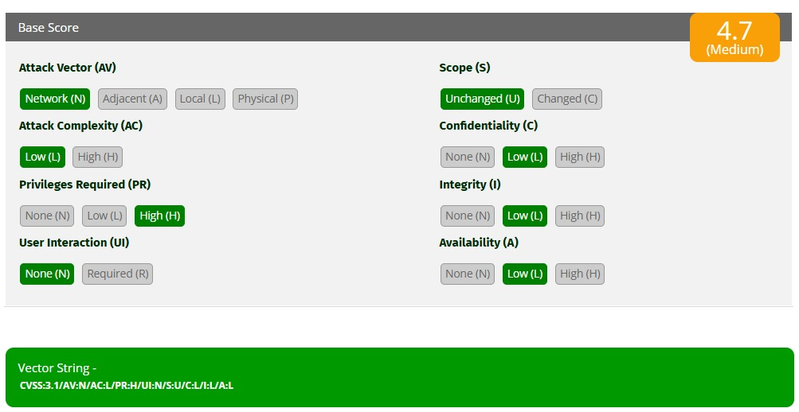
CVSS:3.1/AV:N/AC:L/PR:H/UI:N/S:U/C:L/I:L/A:L
Métrica
Valor
Justificación
AV
N
La vulnerabilidad puede explotarse a través de la red.
AC
L
La explotación requiere baja complejidad.
PR
H
Se necesitan privilegios elevados.
UI
N
No requiere interacción del usuario.
S
U
No cambia el alcance del sistema afectado.
C
L
El impacto en confidencialidad es bajo.
I
L
El impacto en integridad es bajo.
A
L
El impacto en disponibilidad es bajo.
Interpretación técnica
La puntuación final de 4.7 sitúa esta vulnerabilidad en el rango de Severidad Media.
Aunque técnicamente el ataque es sencillo de ejecutar, debido a su Complejidad Baja
(AC:L), y puede realizarse a través de la red mediante Vector de Red (AV:N), el cálculo
de CVSS v3.1 reduce la severidad debido al requisito de Privilegios Elevados (PR:H).
Esto significa que el atacante no puede explotar la vulnerabilidad desde una posición
no autenticada o con permisos básicos, sino que primero debe contar con privilegios
altos dentro del sistema.
• Vector de Ataque (AV:N): La vulnerabilidad es explotable de forma remota a
través de la red, por lo que el atacante no requiere acceso físico ni local al
servidor. Esto aumenta el nivel de exposición del sistema.
• Complejidad de Ataque (AC:L): No existen condiciones especiales para que
el ataque tenga éxito. Una vez que el atacante cuenta con los privilegios
requeridos, la explotación puede ejecutarse de forma directa.
• Privilegios Requeridos (PR:H): Este es el principal factor que reduce la
severidad. El atacante necesita previamente una cuenta con permisos
elevados, lo que disminuye la cantidad de posibles atacantes capaces de
explotar la vulnerabilidad.
• Interacción del Usuario (UI:N): La explotación no requiere que un usuario
legítimo realice alguna acción, como abrir un archivo o hacer clic en un
enlace. Esto facilita que el ataque pueda ejecutarse de manera autónoma.
• Impacto (C:L, I:L, A:L): El impacto es bajo en confidencialidad, integridad y
disponibilidad. Esto significa que la vulnerabilidad puede afectar
parcialmente la información, modificar datos de forma limitada o causar
afectaciones menores al servicio, pero no compromete completamente el
sistema.
ACTIVIDAD 18 - Interpretación y traducción de políticas de filtrado en iptables
Por: Pablo de Jesús Salazar Hernández y el Equipo 4 - 15/05/2026
Introducción
El Modelo Diamante de Análisis de Intrusiones es una metodología utilizada en
ciberseguridad para analizar ataques informáticos mediante la relación entre cuatro
elementos principales: adversario, capacidad, infraestructura y víctima. Este modelo
permite comprender cómo opera un atacante, qué herramientas utiliza y cuáles son
sus objetivos dentro de una intrusión.
Por otra parte, la Cyber Kill Chain es un modelo desarrollado para describir las
diferentes fases de un ciberataque, desde el acceso inicial hasta las acciones finales
del atacante sobre el objetivo. La combinación de ambos modelos permite identificar
patrones de comportamiento, correlacionar eventos y comprender de manera más
clara el desarrollo de una intrusión.
En esta actividad se analizará un escenario de ataque utilizando el Modelo Diamante
y la Cyber Kill Chain para identificar los elementos involucrados, las fases del ataque
y la posible propagación dentro de la red.
Parte 1: Comprensión del Modelo
El Modelo Diamante se basa en cuatro nodos interconectados
Elemento
Descripción
Ejemplo Práctico
Adversario
El actor o grupo responsable del ataque. Puede ser un individuo, una nación-estado o un grupo criminal.
Grupo APT28 (Fancy Bear) o un empleado deshonesto.
Capacidad
Las herramientas, técnicas y procedimientos (TTPs) que utiliza el adversario para ejecutar el evento.
Malware tipo Ransomware, un exploit de día cero o una campaña de Phishing.
Infraestructura
Los recursos físicos o lógicos que el adversario utiliza para entregar la capacidad o comunicarse.
Servidores de Comando y Control (C2), direcciones IP, nombres de dominio o proxies.
Víctima
El objetivo del ataque. Puede ser una organización, una persona, una dirección IP o un activo específico.
El servidor de base de datos de un banco o el correo electrónico de un directivo.
Parte 2: Análisis del Evento
Escenario
Una organización detecta comportamiento anómalo en un equipo. El análisis
revela:
1. La víctima detecta malware.
2. El malware contiene dominios de Comando y Control (C2).
3. Los dominios resuelven a direcciones IP externas.
4. Los logs muestran múltiples hosts conectándose a esas IP.
5. WHOIS/IP revela posible origen del atacante.
Estructura de Evento
Metacaracterística
Descripción del Evento
Marca de tiempo
Momento en que se detecta el malware y las conexiones sospechosas hacia IP externas.
Fase
Compromiso inicial, ejecución del malware y comunicación con C2.
Resultado
El equipo fue comprometido y estableció comunicación con infraestructura externa del atacante.
Dirección
Víctima -> Infraestructura. Tráfico saliente desde los hosts internos hacia dominios e IP externas.
Estructura de Evento
Uso de malware con capacidades de comando y control (C2), resolución DNS y conexiones remotas.
Recursos
Malware, dominios C2, direcciones IP externas, logs de red y registros WHOIS/IP.
Preguntas del Escenario
1. ¿Quién es el adversario en este escenario?
El adversario es un atacante o grupo cibercriminal externo que opera el malware y
la infraestructura de comando y control (C2). Su posible origen puede identificarse
mediante el análisis WHOIS y el rastreo de direcciones IP externas mencionado en
el escenario.
2. ¿Cuál es la capacidad utilizada?
La capacidad utilizada es malware con funciones de comunicación C2, diseñado
para conectarse a dominios específicos y permitir el control remoto del sistema
comprometido. Posiblemente fue distribuido mediante phishing.
3. ¿Qué tipo de infraestructura se emplea?
Se emplea infraestructura externa compuesta por dominios maliciosos, servidores
de comando y control (C2) y direcciones IP públicas utilizadas para la comunicación
con los hosts comprometidos.
4. ¿Quién es la víctima primaria?
La víctima primaria es el equipo o usuario de la organización donde inicialmente se
detectó el comportamiento anómalo y el malware.
5. ¿Existe evidencia de movimiento lateral?
Sí. Los logs muestran múltiples hosts conectándose a las mismas IP externas, lo que
sugiere posible propagación del malware o movimiento lateral dentro de la red
interna.
Parte 3: Relación con la kill chain
Evento
Fase Kill Chain
Detección de Malware
Instalación / Acciones sobre el objetivo
Envío de Phishing
Entrega (Delivery)
Conexión a C2
Comando y Control (C2)
Ejecución de Malware
Explotación
Parte 4: Hilos de actividad(Pivoting)
Hilo 1 – Víctima 1
• El atacante envía un correo de phishing dirigido al administrador.
• El administrador abre el archivo o enlace malicioso.
• Se ejecuta el malware en el equipo comprometido.
• El malware establece conexión con el servidor C2.
• El atacante obtiene acceso remoto al host.
Hilo 2 – Víctima 2
1. El atacante utiliza el host comprometido como proxy o punto de acceso interno.
2. Se realizan conexiones hacia otra máquina dentro de la red.
3. El malware o las credenciales robadas permiten comprometer una segunda
víctima.
4. La segunda víctima también comienza comunicación con la infraestructura C2.
Relación entre ambos (Pivoting)
El pivoting ocurre cuando el atacante utiliza el primer equipo comprometido para
desplazarse lateralmente y atacar otros sistemas dentro de la red. En este caso, la Víctima
1 funciona como puente para comprometer a la Víctima 2.
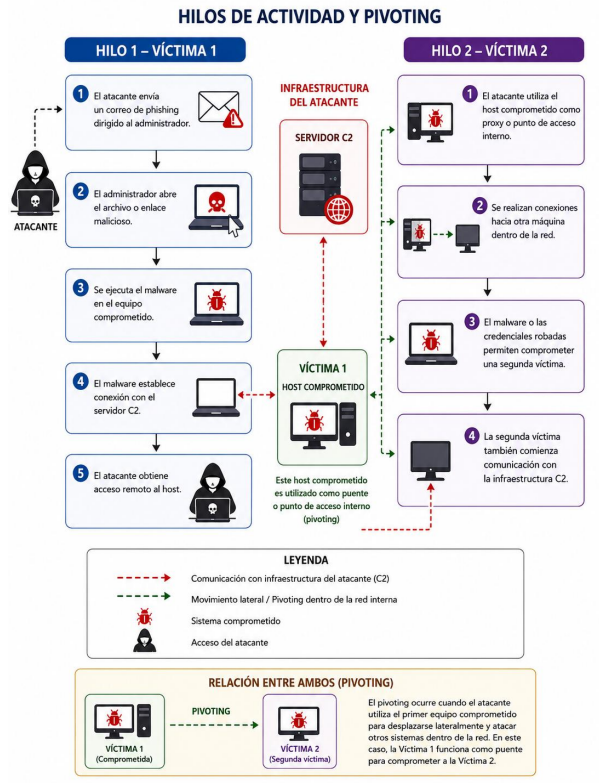
Conclusión
El análisis realizado mediante el Modelo Diamante permitió identificar la relación
entre el atacante, las capacidades utilizadas, la infraestructura maliciosa y las
víctimas afectadas. Asimismo, la Cyber Kill Chain facilitó comprender las diferentes
fases del ataque y detectar indicios de movimiento lateral dentro de la red. El estudio
de los hilos de actividad demostró cómo un host comprometido puede utilizarse para
realizar pivoting y expandir la intrusión hacia otros sistemas. Este tipo de
metodologías son fundamentales para mejorar la detección, análisis y respuesta ante
incidentes de ciberseguridad.
PR 03 - Bajo la lupa: evaluación de ciberseguridad en un corporativo.
Por: Pablo de Jesús Salazar Hernández y el Equipo 4 - 19/05/2026
1.- Alcance
1.1 Descripción de la Organización
Dell Technologies Inc. es una corporación multinacional de tecnología fundada
en 1984 por Michael Dell, con sede en Round Rock, Texas, Estados Unidos. Es uno
de los proveedores de soluciones tecnológicas más grandes del mundo, con
presencia en más de 180 países y una plantilla que supera los 100,000 empleados a
nivel global.
Giro: Diseño, fabricación, comercialización y soporte de productos y servicios
tecnológicos de clase empresarial.
Tamaño: Corporación multinacional de gran escala (Fortune 500). Ingresos
anuales superiores a USD 90,000 millones.
Servicios principales: Hardware (servidores, almacenamiento, redes),
soluciones de nube (Dell APEX), seguridad gestionada (Dell SecureWorks),
servicios de soporte técnico y consultoría.
Clientes: Corporativos globales, gobiernos, instituciones educativas, PYMES y
consumidores finales.
Procesos críticos: Desarrollo de software embebido y firmware, cadena de
suministro de hardware, atención a clientes empresariales y operación de centros de
datos.
Entorno tecnológico: Centros de datos propios (Round Rock, Dublin,
Chengdu), plataformas híbridas en nube, ecosistemas DevOps con Kubernetes,
pipelines CI/CD, repositorios Git y herramientas de análisis estático de código.
1.2 Misión, Visión y Valores
Misión
Impulsar el progreso humano mediante la tecnología, proporcionando a sus clientes
—desde usuarios individuales hasta grandes corporaciones y gobiernos— los
productos, soluciones y servicios que les permitan alcanzar sus objetivos de manera
eficiente, segura y escalable.
Visión
Ser la empresa de tecnología de infraestructura esencial más confiable del mundo,
donde la innovación, la seguridad de la información y la excelencia operativa sean
los pilares que sostengan la transformación digital de sus clientes y socios de
negocio.
Valores Organizacionales
• Integridad: Actuar con honestidad y transparencia en cada decisión de
negocio.
• Innovación: Fomentar el desarrollo de soluciones que generen valor real.
• Responsabilidad: Asumir el compromiso con clientes, empleados y la
sociedad.
• Seguridad: Proteger la información como activo estratégico fundamental.
• Excelencia operativa: Mantener estándares de calidad y desempeño de clase
mundial.
Objetivos Organizacionales del SGSI
• Salvaguardar la confidencialidad, integridad y disponibilidad de los activos de
información.
• Garantizar la alineación continua con ISO/IEC 27001:2022, RGPD y
legislaciones locales de protección de datos.
• Identificar, evaluar y tratar sistemáticamente las amenazas de seguridad que
puedan impactar las operaciones.
• Promover una cultura de seguridad compartida en todos los niveles
jerárquicos.
• Mejorar continuamente la eficacia del SGSI mediante auditorías internas y
revisiones por la dirección.
1.3 Estructura Organizacional
Dell Technologies opera bajo una estructura funcional-matricial. Las principales
áreas funcionales son: Ingeniería de Producto (Engineering & Product), Operaciones
y Cadena de Suministro, Tecnologías de la Información (IT Global), Seguridad de la
Información (CISO Office), Ventas y Marketing Global, Servicios al Cliente
(Customer Support), y Legal & Cumplimiento Normativo.
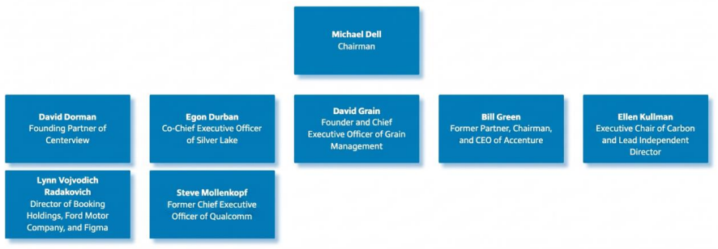
1.4 Área, Proceso y Actividad bajo ISO 27001
Nivel
Descripción
Dirección
Ingeniería de Producto y Desarrollo de Software
Área
DevSecOps & Platform Engineering
Proceso
Ciclo de Vida de Desarrollo Seguro de Software (S-SDLC)
Actividad
Gestión segura de repositorios de código fuente, pipelines CI/CD, control de acceso a entornos DevOps y protección de propiedad intelectual de firmware
1.5 Justificación de la Intervención
El área de DevSecOps & Platform Engineering es la más crítica para la
implementación prioritaria del SGSI por las siguientes razones:
• Concentración de activos de alto valor: Los repositorios de código fuente
contienen la propiedad intelectual más valiosa de Dell (firmware de
PowerEdge, iDRAC, OpenManage).
• Alto riesgo de acceso no autorizado: Los pipelines CI/CD tienen acceso
directo a entornos de producción, lo que convierte una brecha en este
proceso en un vector de ataque de alto impacto.
• Superficie de ataque amplia: La integración de herramientas de terceros
(GitHub, Jenkins, SonarQube, Artifactory) expone a Dell a vulnerabilidades en
la cadena de suministro de software.
• Regulaciones aplicables: El RGPD y la Ley de Resiliencia Cibernética de la
UE exigen controles formales sobre el desarrollo seguro de software.
• Precedente de incidentes: El sector tecnológico registra un incremento del
42% en ataques a cadenas de suministro de software (SolarWinds, Log4j), lo
que eleva la exposición de Dell como fabricante global.
1.6 Alcance, Exclusiones, Supuestos y Restricciones
Alcance formal del SGSI
El presente SGSI aplica a los procesos, sistemas de información, infraestructura
tecnológica y activos de datos relacionados con el diseño, desarrollo y despliegue
de software en el área de DevSecOps & Platform Engineering de Dell Technologies,
incluyendo sus repositorios Git corporativos, pipelines CI/CD, entornos de pruebas y
herramientas de análisis de seguridad de código.
Exclusiones
• Subsidiarias con SGSI certificado de forma independiente (Dell Boomi,
VMware).
• Operaciones de manufactura física de hardware en plantas de ensamblaje.
• Sistemas de ventas y CRM no gestionados por el área de ingeniería.
Supuestos
• La alta dirección otorga el presupuesto y apoyo necesario para la
implementación del SGSI.
• El personal del área DevSecOps tiene disponibilidad para capacitación y
cumplimiento de controles.
Restricciones
• El plazo de certificación es de 18 meses a partir de la aprobación del
proyecto.
• El alcance no incluye centros de datos externos gestionados por proveedores
de nube pública.
Activos
1. Servidores de Rack: Unidades modulares para centros de datos.
2. Servidores Blade: Servidores delgados que comparten chasis y alimentación.
3. Workstations de Torre: Equipos de alto rendimiento para renderizado y CAD.
4. Workstations Móviles: Laptops de gama profesional con GPUs certificadas.
5. Nodos de Cómputo de IA: Servidores especializados con aceleradores
tensoriales.
6. Máquinas Virtuales (VMs): Instancias lógicas de servidores.
7. Contenedores (Docker/Kubernetes): Unidades de software aisladas para
microservicios.
8. TPU pod(Tensor Processing Units)/instancia de tpu: Hardware para
aprendizaje profundo.
9. Mainframes: Computadoras de gran escala para transacciones críticas.
10.Microcontroladores (MCU): Chips para control de hardware específico.
11.FPGAs: Chips programables para aceleración de tareas específicas.
12.Thin Clients: Terminales ligeras que procesan en el servidor.
13.Sistemas Operativos de Servidor: Licencias de Windows Server, Red Hat, etc.
14.Clústeres de HPC: Conjuntos de nodos trabajando como una sola
computadora.
15.Coprocesadores de Cifrado: Hardware dedicado a la criptografía.
16.Arreglos Flash (All-Flash Arrays): Sistemas de almacenamiento sin partes
móviles.
17.NAS (Network Attached Storage): Almacenamiento conectado a la red local.
18.SAN (Storage Area Network): Redes dedicadas de almacenamiento.
19.Librerías de Cintas (LTO): Para respaldo físico a largo plazo.
20.Bases de Datos SQL: Estructuras lógicas de datos (tablas).
21.Data Lakes: Repositorios de datos no estructurados.
22.Objetos de Almacenamiento en la Nube (Buckets): Espacio virtualizado.
23.Tarjetas SD/MicroSD: Para almacenamiento en dispositivos de borde.
24.Almacenamiento en Memoria (In-Memory DB): Datos que residen en la RAM.
25.Dispositivos de Respaldo Inmutable: Hardware que impide borrar datos.
26.Switches Core: Conmutadores de alta capacidad en el núcleo de la red.
27.Switches de Acceso: Conectan los dispositivos finales a la red.
28.Routers de Borde: Gestionan la salida a Internet y VPNs.
29.Firewalls de Próxima Generación (NGFW): Filtran el tráfico de red.
30.Puntos de Acceso Wi-Fi (AP): Antenas para transmisión inalámbrica.
31.Controladoras de Red Inalámbrica (WLC): Gestionan múltiples APs.
32.Transceptores de Fibra Óptica (SFP+): Convierten luz en electricidad.
33.Balanceadores de Carga: Distribuyen el tráfico entre servidores.
34.Pasarelas VoIP: Transmiten voz sobre protocolos de datos.
35.Tarjetas de Red (NIC): Interfaces físicas en servidores.
36.Puentes de Red (Bridges): Conectan segmentos de red distintos.
37.Concentradores VPN: Permiten transmisiones seguras remotas.
38.Proxy Servers: Activos que transmiten peticiones en nombre del usuario.
39.Módems DSL/Fibra: Modulan la señal para transmisión externa.
40.DNS Servers: Transmiten la resolución de nombres a IPs.
41.SD-WAN Appliances: Gestión inteligente de la transmisión WAN.
42.Switches de Canal de Fibra (Fibre Channel): Específicos para SAN.
2.- Referemcias normativas
2.1 Norma Base del SGSI
ISO/IEC 27001:2022 (International Organization for Standardization [ISO] &
International Electrotechnical Commission [IEC], 2022) es la norma internacional
principal que establece los requisitos para implementar, mantener y mejorar un
Sistema de Gestión de Seguridad de la Información (SGSI). Para Dell Technologies,
esta norma constituye el marco obligatorio de certificación que garantiza un enfoque
sistemático y basado en riesgos para la protección de los activos de información.
2.2 Controles y Buenas Prácticas
ISO/IEC 27002:2022 (ISO & IEC, 2022) actúa como código de buenas prácticas
complementario a ISO 27001, describiendo 93 controles de seguridad organizados
en cuatro dominios: organizacionales, de personas, físicos y tecnológicos. Para Dell,
esta norma es esencial para seleccionar e implementar los controles del Anexo A
aplicables al área DevSecOps, como la gestión de acceso privilegiado, la seguridad
en el desarrollo y la respuesta a incidentes.
ISO/IEC 27034:2011/2015 (ISO & IEC, 2011) establece directrices de seguridad
para aplicaciones, asegurando que el software desarrollado por Dell integre
principios de "security by design" desde las fases iniciales del S-SDLC. Esta norma
es directamente aplicable al proceso de desarrollo seguro de firmware y software
empresarial.
ISO/IEC 27033:2010-2016 (ISO & IEC, 2010) abarca la seguridad de redes,
incluyendo diseño, segmentación, VPNs y redes inalámbricas. Es especialmente
relevante para Dell como fabricante de hardware de networking (switches, routers,
firewalls), garantizando que la infraestructura de red del entorno DevSecOps esté
adecuadamente segmentada y protegida.
2.3 Gestión de Riesgos
ISO/IEC 27005:2022 (ISO & IEC, 2022) proporciona directrices para la gestión
de riesgos de seguridad de la información, siendo el marco de referencia para el
proceso de identificación, análisis, evaluación y tratamiento de riesgos
implementado en la Sección 06 del presente documento. Permite a Dell adoptar un
enfoque estructurado y rentable para gestionar amenazas de forma sostenible.
2.4 Normas Específicas al Giro de Dell
ISO/IEC 27017:2015 (ISO & IEC, 2015) proporciona controles de seguridad
específicos para proveedores y usuarios de servicios en la nube. Es crítica para Dell
APEX y para la gestión de la nube híbrida en el entorno DevSecOps, estableciendo
responsabilidades claras entre Dell y sus proveedores de nube (AWS, Azure, GCP).
ISO/IEC 27018:2019 (ISO & IEC, 2019) establece controles para la protección
de información de identificación personal (PII) en entornos de nube pública. Para
Dell, que procesa datos de millones de clientes corporativos, esta norma garantiza
el cumplimiento de RGPD y legislaciones de privacidad.
ISO/IEC 27036-3:2013 e ISO/IEC 27036-4:2016 (ISO & IEC, 2013, 2016)
son específicas para la seguridad en la cadena de suministro de TIC y los servicios
en la nube. Son vitales para una empresa que ensambla y distribuye hardware
globalmente, garantizando la integridad de los componentes de software y hardware
provistos por terceros.
ISO/IEC 27035:2016/2023 (ISO & IEC, 2016) establece los principios y
directrices para la gestión de incidentes de seguridad de la información, desde la
planeación hasta la mejora continua. Es el marco base para el equipo CSIRT de Dell
y para los procesos documentados en la Sección 10 del presente SGSI.
ISO/IEC 27031:2011 (ISO & IEC, 2011) proporciona directrices para la
continuidad del negocio relacionadas con las TIC. Para el área DevSecOps,
garantiza que los entornos de desarrollo y despliegue cuenten con planes de
recuperación ante desastres alineados con los RTO y RPO definidos en la Sección
09.
ISO/IEC 27037:2012 (ISO & IEC, 2012) establece directrices para la
identificación, recopilación, adquisición y preservación de evidencia digital. Es
aplicable a los servicios de seguridad gestionada de Dell (Dell SecureWorks) y a las
investigaciones forenses ante incidentes en el área DevSecOps.
2.5 Referencias Bibliográficas (APA 7)
International Organization for Standardization & International Electrotechnical
Commission. (2022). ISO/IEC 27001:2022: Information security, cybersecurity and
privacy protection — Information security management systems — Requirements.
ISO.
International Organization for Standardization & International Electrotechnical
Commission. (2022). ISO/IEC 27002:2022: Information security, cybersecurity and
privacy protection — Information security controls. ISO.
International Organization for Standardization & International Electrotechnical
Commission. (2022). ISO/IEC 27005:2022: Information security, cybersecurity and
privacy protection — Guidance on managing information security risks. ISO.
International Organization for Standardization & International Electrotechnical
Commission. (2015). ISO/IEC 27017:2015: Information technology — Security
techniques — Code of practice for information security controls based on ISO/IEC
27002 for cloud services. ISO.
International Organization for Standardization & International Electrotechnical
Commission. (2019). ISO/IEC 27018:2019: Information technology — Security
techniques — Code of practice for protection of personally identifiable information
(PII) in public clouds acting as PII processors. ISO.
International Organization for Standardization & International Electrotechnical
Commission. (2011). ISO/IEC 27034-1:2011: Information technology — Security
techniques — Application security. ISO.
International Organization for Standardization & International Electrotechnical
Commission. (2011). ISO/IEC 27031:2011: Information technology — Security
techniques — Guidelines for information and communication technology readiness
for business continuity. ISO.
International Organization for Standardization & International Electrotechnical
Commission. (2016). ISO/IEC 27035-1:2016: Information technology — Security
techniques — Information security incident management. ISO.
International Organization for Standardization & International Electrotechnical
Commission. (2012). ISO/IEC 27037:2012: Information technology — Security
techniques — Guidelines for identification, collection, acquisition and preservation of
digital evidence. ISO.
3.-Términos y condiciones
3.1 Términos Clave del SGSI
Los siguientes términos se definen conforme a ISO/IEC 27000:2018 y son aplicables
a la intervención realizada en Dell Technologies:
Término
Definición aplicada al contexto de Dell Technologies
Activo de información
Cualquier elemento con valor para Dell que requiere protección: código fuente, datos de clientes, credenciales, infraestructura y documentación técnica.
Amenaza
Causa potencial de un incidente que puede dañar un activo. Ej.: ransomware dirigido a repositorios de código fuente.
Vulnerabilidad
Debilidad de un activo o control que puede ser explotada por una amenaza. Ej.: pipeline CI/CD sin escaneo de dependencias (SCA).
Riesgo
Combinación de la probabilidad de ocurrencia de una amenaza y su impacto sobre los activos y objetivos de seguridad de Dell.
Control
Medida que modifica el riesgo (preventiva, detectiva o correctiva). Ej.: autenticación multifactor (MFA) en accesos a DevOps.
Confidencialidad
Garantiza que la información no sea divulgada a personas o procesos no autorizados; crítica para la propiedad intelectual de firmware.
Integridad
Exactitud y completitud de la información; asegura que código fuente y binarios no se alteren sin autorización durante el pipeline.
Disponibilidad
Que la información y los servicios estén accesibles y utilizables cuando los requiera una entidad autorizada; asegura RTO de entornos de desarrollo.
Incidente de seguridad
Evento o serie de eventos que comprometen la seguridad de la información. Ej.: exfiltración de credenciales de repositorios Git.
Auditoría interna
Proceso independiente y documentado para obtener y evaluar evidencias frente a los criterios del SGSI de Dell.
Tratamiento del riesgo
Proceso para seleccionar e implementar opciones frente al riesgo: aceptar, mitigar, evitar/rechazar o transferir.
Propietario del activo
Persona responsable de gestionar el activo durante su ciclo de vida dentro de la organización.
No conformidad
Incumplimiento de un requisito del SGSI; puede ser mayor (compromete eficacia) o menor (desviación puntual).
Mejora continua
Actividad recurrente para mejorar el desempeño del SGSI mediante el ciclo PDCA (Planificar-Hacer-Verificar-Actuar).
3.2 Condiciones de la Intervención
3.2.1 Límites de la intervención
La evaluación y diagnóstico realizado en el presente documento se circunscribe exclusivamente al área de DevSecOps & Platform Engineering. Ningún hallazgo, recomendación o control propuesto implica modificaciones a los sistemas de producción sin previa autorización formal de la dirección y el CISO.
3.2.2 Confidencialidad
Toda la información obtenida durante la intervención, incluyendo inventarios de activos, resultados de auditoría, hallazgos de riesgos y evidencias, es de carácter estrictamente confidencial. Su divulgación está restringida a los miembros del equipo del SGSI y a la alta dirección, bajo acuerdo de no divulgación (NDA).
3.2.3 Manejo de evidencias
Las evidencias recopiladas durante la intervención (capturas de pantalla, registros de configuración, logs de auditoría) serán custodiadas por el Director de Riesgos y Cumplimiento, almacenadas en repositorios cifrados (AES-256) y accesibles únicamente mediante control de acceso basado en roles (RBAC).
3.2.4 Exclusiones
La presente intervención no incluye pruebas de penetración sobre sistemas en producción, evaluación de infraestructura de planta de manufactura ni sistemas de subsidiarias con SGSI independiente.
3.2.5 Responsabilidades
- Director DevSecOps: Responsable de facilitar el acceso a los activos y documentación requerida.
- Director de Riesgos y Cumplimiento: Responsable de validar y custodiar los hallazgos.
- CISO: Responsable de aprobar el plan de tratamiento de riesgos y las políticas resultantes.
- Gerente S-SDLC: Responsable operativo de implementar los controles definidos.
Contexto de la organización
Los activos se clasifican conforme a la triada CIA (Confidencialidad, Integridad,
Disponibilidad) en tres niveles: A = Alto, M = Medio, B = Bajo. La codificación de activos
(A-01 a A-40) garantiza trazabilidad directa hacia la Sección 06 (Matriz de Riesgos). El
inventario distingue activos internos (bajo control directo de Dell) y externos
(dependencias de terceros).
ID
Activo
Tipo
Propietario
Proceso asociado
C
I
A
Impacto si comprometido
A-01
Repositorio Git Corporativo (GitHub Enterprise)
Interno
Dir. DevSecOps
S-SDLC
A
A
A
Exfiltración de propiedad intelectual de firmware y código fuente crítico
A-02
Pipeline CI/CD (Jenkins/GitLab CI)
Interno
Gerente SSDLC
Integración continua
A
A
A
Inyección de código malicioso en artefactos de producción
A-03
Infraestructura PKI (CA raíz y subordinadas)
Interno
Dir. IT Global
Firma de código
A
A
M
Compromiso de firmas digitales de firmware; distribución de software malicioso
A-04
Directorio Activo / Azure AD
Interno
Dir. IT Global
IAM
A
A
A
Acceso no autorizado a todos los sistemas del entorno DevSecOps
A-05
Sistemas ERP (SAP S/4HANA)
Interno
Dir. Finanzas
Planificación de recursos
A
A
A
Alteración de registros financieros y operativos
A-06
Bóveda PAM (CyberArk)
Interno
CISO
Acceso privilegiado
A
A
A
Explotación de credenciales de cuentas privilegiadas
A-07
Módulos HSM (Thales Luna HSM)
Interno
Dir. Seguridad
Criptografía
A
A
M
Exposición de claves criptográficas maestras
A-08
Plataforma SIEM (Splunk Enterprise)
Interno
Dir. CSIRT
Monitoreo SOC
M
A
A
Pérdida de visibilidad de amenazas activas
A-09
Workstations de desarrolladores (Precision 5680)
Interno
Gerente SSDLC
Desarrollo de software
A
A
M
Punto de entrada para APT dirigidas al código fuente
A-10
Logs de auditoría (Syslog/SIEM)
Interno
Dir. Cumplimiento
Trazabilidad
A
A
A
Pérdida de evidencias forenses ante incidentes
A-11
Artefactos de software firmados (Artifactory)
Interno
Gerente SSDLC
Distribución de software
A
A
A
Distribución de versiones comprometidas a clientes
A-12
Entorno de pruebas (staging Kubernetes)
Interno
Gerente SSDLC
QA y pruebas
M
A
M
Introducción de vulnerabilidades en artefactos de producción
A-13
Documentación técnica (Confluence)
Interno
Dir. DevSecOps
Gestión del conocimiento
A
M
M
Exposición de arquitecturas internas a actores externos
A-14
Tokens MFA (YubiKey/TOTP)
Interno
Dir. IT Global
Autenticación
A
A
A
Elusión de autenticación robusta; acceso no autorizado
A-15
Nodos de cómputo IA (GPU A100)
Interno
Dir. I+D
Entrenamiento de modelos
M
A
M
Uso no autorizado para minería o ataques adversariales
A-16
Backups cifrados (Veeam + Inmutable)
Interno
Dir. IT Global
Continuidad del negocio
A
A
A
Pérdida de capacidad de recuperación ante ransomware
A-17
Marco normativo interno PSI
Interno
CISO
Gobernanza SGSI
A
A
M
Vacíos normativos que faciliten incumplimientos regulatorios
A-18
Capital humano especializado (DevSecOps engineers)
Interno
Dir. Talento
Operación continua
M
A
A
Pérdida de continuidad operativa por rotación o sabotaje
A-19
Core Networking (Cisco Nexus 9000)
Interno
Dir. IT Global
Conectividad interna
M
A
A
Disrupción total de la comunicación interna del área
A-20
Sistemas de seguridad física (CCTV, control de acceso)
Interno
Dir. Seguridad Física
Protección perimetral
M
A
A
Acceso físico no autorizado a servidores y workstations
A-21
Proveedor cloud AWS (EC2/S3 para CI/CD)
Externo
Dir. IT Global
Infraestructura DevOps
A
A
A
Compromiso del entorno CI/CD alojado en nube pública
A-22
Repositorios de código abierto (npm, PyPI, Maven)
Externo
Gerente SSDLC
Dependencias de software
M
A
M
Ataque a cadena de suministro por dependencias comprometidas (typosquatting)
A-23
APIs de socios tecnológicos (Intel vPro, AMD Secure)
Externo
Dir. Ingeniería
Integración de hardware
A
A
M
Exposición de datos técnicos sensibles mediante APIs inseguras
A-24
Proveedores de chips (Intel, TSMC, Samsung)
Externo
Dir. Suministro
Fabricación hardware
M
A
A
Inserción de hardware backdoor en la cadena de suministro
A-25
ISP corporativo (AT&T / Lumen)
Externo
Dir. IT Global
Conectividad externa
B
M
A
Interrupción de conectividad con centros de datos externos
A-26
Marcos legales y regulatorios (RGPD, CCPA, NIS2)
Externo
Dir. Legal
Cumplimiento normativo
A
A
M
Sanciones regulatorias y pérdida de certificaciones
A-27
Organismos certificadores (BSI, Bureau Veritas)
Externo
CISO
Auditoría externa
A
A
M
Pérdida de certificación ISO 27001; daño reputacional grave
A-28
Plataforma Bug Bounty (HackerOne)
Externo
Dir. Seguridad
Gestión de vulnerabilidades
M
A
M
Divulgación pública de vulnerabilidades no parcheadas
A-29
Servicios de inteligencia de amenazas (CrowdStrike)
Externo
Dir. CSIRT
Detección de amenazas
M
A
A
Pérdida de visibilidad sobre amenazas activas al sector
A-30
Red pública de suministro eléctrico
Externo
Dir. Instalaciones
Continuidad operativa
B
B
A
Interrupción de operaciones por corte eléctrico extendido
A-31
DNS externos (Route 53 / Cloudflare)
Externo
Dir. IT Global
Resolución de nombres
B
M
A
Ataques DNS spoofing o DDoS sobre servicios externos
A-32
Redes públicas de transmisión (Internet)
Externo
Dir. IT Global
Conectividad global
B
M
A
Ataques DDoS sobre servicios expuestos al exterior
A-33
Plataformas externas de comunicación (MS Teams/Slack)
Externo
Dir. Talento
Colaboración interna
M
M
A
Exfiltración de información sensible a través de canales no corporativos
A-34
Servicios logísticos (UPS/DHL para hardware)
Externo
Dir. Suministro
Distribución
B
M
M
Intercepción de hardware en tránsito para implantación de backdoors
A-35
Pasarelas de pago (Stripe/PayPal Enterprise)
Externo
Dir. Finanzas
Transacciones comerciales
A
A
M
Fraude financiero y robo de datos de tarjetas de clientes
A-36
Condiciones climáticas y ambientales
Externo
Dir. Instalaciones
Resiliencia física
B
B
A
Daño a infraestructura física por eventos climáticos extremos
A-37
Situación geopolítica regional
Externo
Dir. Legal
Continuidad de negocio
M
B
M
Restricción de operaciones por conflictos internacionales
A-38
Estándares industriales externos (NIST CSF, CIS)
Externo
CISO
Marco de referencia
M
A
M
Desalineación con mejores prácticas del sector tecnológico
A-39
Reputación y opinión pública (redes sociales)
Externo
Dir. Marketing
Imagen corporativa
A
M
B
Crisis reputacional ante incidentes de seguridad divulgados
A-40
Soporte técnico de fabricantes (Microsoft EA, VMware)
Externo
Dir. IT Global
Mantenimiento de plataformas
M
M
A
Pérdida de soporte para parches críticos de seguridad
Leyenda CIA: A = Alto | M = Medio | B = Bajo || Azul = Activo Interno | Amarillo =
Activo Externo
5.-Liderazgo
5.1 Política General de Seguridad de la Información
Declaración de la Dirección:
Dell Technologies reconoce que la información es el activo estratégico más valioso de la organización y el núcleo de su ventaja competitiva en el mercado global de tecnología. En consecuencia, la alta dirección asume el compromiso irrevocable de proteger la confidencialidad, integridad y disponibilidad de los activos de información mediante la implementación, mantenimiento y mejora continua de un Sistema de Gestión de Seguridad de la Información (SGSI) conforme a la norma ISO/IEC 27001:2022.
Esta política aplica a todos los empleados, contratistas, socios estratégicos y proveedores que tengan acceso a los sistemas, redes, datos o instalaciones de Dell Technologies en el ámbito del área DevSecOps & Platform Engineering. Su cumplimiento es obligatorio y su incumplimiento está sujeto a las consecuencias disciplinarias, contractuales y legales establecidas en el reglamento interno y los marcos normativos aplicables.
Objetivo: Proteger los activos de información de Dell frente a amenazas internas, externas, intencionales o accidentales, garantizando la continuidad del negocio y el cumplimiento regulatorio.
Alcance: Área de DevSecOps & Platform Engineering, incluyendo todos los activos identificados en la Sección 04.
Compromiso de la dirección: La dirección asigna recursos suficientes, lidera con el ejemplo en materia de seguridad y revisa la eficacia del SGSI al menos una vez al año.
5.2 Políticas Específicas de Seguridad
Las siguientes 10 políticas de seguridad responden directamente a los activos, riesgos y procesos identificados en el presente SGSI:
ID
Política
Estándar (Obligatorio)
Directriz (Recomendado)
Procedimiento (Cómo)
Línea Base (Mínimo aceptable)
P-01
Control de Acceso y Gestión de Identidades Privilegiadas
Todo acceso a los entornos DevSecOps (repositorios Git, pipelines CI/CD, bóveda PAM)
debe autenticarse mediante MFA con hardware token (YubiKey) y gestionarse bajo el
principio de mínimo privilegio.
Se recomienda implementar revisiones trimestrales de accesos (Access Reviews)
y alertas automáticas ante intentos de acceso fuera del horario laboral.
1. El Gerente S-SDLC solicita acceso mediante ticket formal en ServiceNow.
2. El Dir. IT Global valida la necesidad de negocio.
3. Se asigna el perfil de acceso en Azure AD.
4. El usuario configura YubiKey.
5. El acceso se documenta en el registro de identidades privilegiadas de CyberArk.
100% de cuentas privilegiadas con MFA activo. Cero cuentas compartidas en entornos de producción.
P-02
Seguridad en el Ciclo de Vida de Desarrollo de Software (SSDLC)
Todo software desarrollado en Dell debe superar análisis SAST, DAST y SCA antes
de su integración al pipeline de producción.
Se recomienda adoptar el modelo DevSecOps con herramientas integradas
(Snyk, SonarQube, OWASP ZAP) y capacitación continua en programación segura.
1. El desarrollador integra código al repositorio Git.
2. El pipeline CI/CD activa automáticamente SAST y SCA.
3. Si existen hallazgos críticos, el pipeline se detiene.
4. El desarrollador corrige y reenvía.
5. QA realiza DAST previo al release.
Cobertura mínima del 90% del código por herramientas SAST.
Cero vulnerabilidades críticas en artefactos publicados.
P-03
Gestión de Parches y Vulnerabilidades
Los parches críticos deben aplicarse en máximo 72 horas tras su publicación oficial.
Se recomienda automatizar la aplicación de parches y suscribirse
a boletines de fabricantes.
1. El CSIRT recibe alerta.
2. Se evalúa impacto en activos.
3. Se aprueba ventana de mantenimiento.
4. Se prueba en staging.
5. Se aplica en producción.
6. Se documenta en la CMDB.
≥95% de parches críticos aplicados en las primeras 72 horas.
P-04
Clasificación y Manejo de Información
Toda información debe clasificarse como Pública, Interna,
Confidencial o Secreto Corporativo.
Se recomienda aplicar etiquetado automático con Microsoft Purview
y capacitación continua.
1. El autor clasifica el documento.
2. Se aplica etiqueta correspondiente.
3. Información confidencial requiere cifrado AES-256.
4. Eliminación requiere aprobación del propietario.
100% de documentos técnicos clasificados.
Cero documentos confidenciales sin cifrado.
P-05
Gestión de Incidentes de Seguridad
Todo incidente debe reportarse al CSIRT en máximo 1 hora desde su detección.
Se recomienda implementar ServiceNow ITSM y simulacros semestrales.
1. Se reporta el incidente.
2. El CSIRT clasifica severidad.
3. Se activa playbook.
4. Se contiene y preservan evidencias.
5. Se notifica dirección.
6. Se genera informe post-incidente.
MTTD ≤4 horas. MTTC ≤8 horas para incidentes P1.
P-06
Gestión de Acceso de Terceros y Proveedores
Ningún proveedor puede acceder a sistemas sin NDA,
evaluación de seguridad y acceso temporal monitoreado.
Se recomienda usar Guest VLAN y monitoreo de sesiones privilegiadas.
1. El proveedor firma NDA.
2. Se solicita acceso temporal.
3. Se crea cuenta temporal.
4. El acceso es monitoreado.
5. La cuenta se desactiva al finalizar contrato.
100% de accesos con expiración configurada.
Cero cuentas activas tras término de contrato.
P-07
Seguridad en la Nube y Entornos Híbridos
Toda infraestructura DevOps en nube pública debe operar bajo Zero Trust.
Se recomienda implementar CSPM y revisiones mensuales en AWS Security Hub.
1. Se diseña infraestructura segura.
2. Seguridad valida configuración CSPM.
3. Se aplican SCPs.
4. Se configuran alertas CloudTrail.
5. Revisión mensual de Security Hub.
AWS Security Hub ≥85%.
100% de buckets S3 cifrados.
P-08
Copias de Seguridad y Continuidad Operativa
Los repositorios Git y artefactos deben respaldarse diariamente
con copias inmutables.
Se recomienda estrategia 3-2-1 y pruebas documentadas de restauración.
1. Veeam ejecuta respaldos diarios.
2. Las copias se almacenan local y offsite.
3. Se verifica el reporte diario.
4. Se realizan pruebas trimestrales.
5. Se reportan resultados al CISO.
Tasa de éxito ≥99.5%.
RTO ≤4 horas. RPO ≤24 horas.
P-09
Concienciación y Capacitación en Seguridad
Todo el personal debe completar capacitación anual obligatoria
con calificación mínima del 80%.
Se recomienda complementar con phishing simulado y sesiones prácticas.
1. El CISO define plan anual.
2. RR.HH. matricula al personal.
3. El personal completa módulos.
4. Se aplica examen.
5. Los no aprobados reciben capacitación adicional.
Cobertura del 100%.
Tasa de aprobación ≥80%.
Phishing simulado ≤5%.
P-10
Gestión de Activos de Información
Todo activo debe estar inventariado, clasificado y con propietario asignado.
Se recomienda integrar la CMDB con ServiceNow para automatización.
1. Se registra el activo en CMDB.
2. Se revisa semestralmente.
3. Los propietarios actualizan información.
4. Los activos dados de baja se destruyen de forma segura.
5. Se archivan evidencias de destrucción.
Inventario 100% actualizado.
Cero activos sin propietario.
100% de bajas documentadas.
5.3 Matriz RACI de Responsabilidades
La matriz RACI define claramente las responsabilidades para cada política: R =
Responsable (ejecuta), A = Aprobador (rinde cuentas), C = Consultado (aporta
criterio), I = Informado (recibe notificaciones).
Política
Responsable (R)
Aprobador (A)
Consultado (C)
Informado (I)
P-01 – Control de Acceso y Gestión de Identidades Privilegiadas
Gerente SSDLC
Dir. IT Global
CISO
Dir. Auditoría
P-02 – Seguridad en el Ciclo de Vida de Desarrollo de Software (S-SDLC)
Desarrolladores DevSecOps
Gerente SSDLC
Dir. Seguridad
Dir. Auditoría
P-03 – Gestión de Parches y Vulnerabilidades
Dir. IT Global
CISO
Gerente SSDLC
Dir. Cumplimiento
P-04 – Clasificación y Manejo de Información
Propietario del activo
Dir. Cumplimiento
CISO
Todo el personal
P-05 – Gestión de Incidentes de Seguridad
Dir. CSIRT
CISO
Dir. Legal
Alta dirección
P-06 – Gestión de Acceso de Terceros y Proveedores
Dir. Suministro
Dir. IT Global
CISO
Dir. Legal
P-07 – Seguridad en la Nube y Entornos Híbridos
Arquitecto Cloud
Dir. IT Global
CISO
Dir. Cumplimiento
P-08 – Copias de Seguridad y Continuidad Operativa
Cifrado de todo el código fuente; pérdida de IP de firmware
5
5
25
Crítico
Mitigar
P-01: MFA obligatorio;
P-08: Backup inmutable diario;
P-02: Análisis de secretos en Git (git-secrets)
R-02
A-02 Pipeline CI/CD
Inyección de código malicioso
Dependencias sin verificación SCA
Distribución de software comprometido a clientes globales
4
5
20
Crítico
Mitigar
P-02: SCA automático con Snyk;
P-03: Gestión de parches en dependencias;
P-07: Escaneo CSPM del pipeline
R-03
A-04 Azure AD / Directorio Activo
Ataque de credential stuffing
Contraseñas débiles sin política de complejidad
Compromiso masivo de cuentas y acceso no autorizado
4
5
20
Crítico
Mitigar
P-01: Contraseñas robustas + MFA;
P-06: Segregación de accesos de terceros
R-04
A-03 PKI
Compromiso de CA raíz
HSM sin respaldo redundante
Firma de software malicioso con certificados legítimos
2
5
10
Alto
Mitigar
P-07: HSM redundante en zona segura;
P-08: Backup cifrado de material criptográfico
R-05
A-22 Dependencias de código abierto
Ataque a cadena de suministro (typosquatting)
Ausencia de pinning de versiones y verificación hash
Incorporación de malware en artefactos de software
4
4
16
Crítico
Mitigar
P-02: Hash verification en SCA;
P-03: Allowlist de repositorios aprobados;
P-10: Registro de dependencias
R-06
A-09 Workstations desarrolladores
APT mediante spear phishing
Falta de EDR actualizado y concienciación insuficiente
Punto de entrada para acceso lateral a repositorios y pipelines
3
4
12
Alto
Mitigar
P-09: Campañas phishing simulado;
P-03: EDR CrowdStrike actualizado;
P-01: Segmentación de red
R-07
A-10 Logs de auditoría
Eliminación de evidencias forenses
SIEM sin alertas de alteración de logs
Imposibilidad de investigar incidentes y demostrar cumplimiento
2
4
8
Medio
Mitigar
P-05: Log forwarding inmutable a SIEM;
P-10: Trazabilidad de accesos a logs
R-08
A-21 AWS cloud
Configuración incorrecta de S3
Ausencia de revisión CSPM
Exposición pública accidental de artefactos o datos sensibles
3
4
12
Alto
Mitigar
P-07: AWS Security Hub ≥85%;
P-04: Clasificación de buckets con Macie
R-09
A-16 Backups
Ransomware que cifra respaldos
Backups accesibles desde el mismo segmento comprometido
Pérdida total de recuperación ante ransomware
2
5
10
Alto
Mitigar
P-08: Backups inmutables con Object Lock;
Segmentación de red para respaldos
R-10
A-26 Regulaciones (RGPD/NIS2)
Incumplimiento regulatorio
Ausencia de revisión periódica normativa
Multas y pérdida de certificaciones
2
5
10
Alto
Evitar
P-04: Monitoreo de cambios regulatorios;
P-09: Capacitación en cumplimiento
R-11
A-18 Capital humano
Sabotaje interno o renuncia de personal clave
Ausencia de offboarding seguro
Exfiltración de propiedad intelectual por exempleados
2
4
8
Medio
Mitigar
P-01: Revocación inmediata de accesos;
P-04: Clasificación de información
R-12
A-30 Suministro eléctrico
Corte eléctrico prolongado
Sin UPS ni generadores
Pérdida de datos y detención del pipeline CI/CD
2
3
6
Medio
Mitigar
P-08: UPS en racks de desarrollo;
P-08: Pruebas de failover semestrales
6.2 Priorización de Riesgos
Los riesgos críticos (R-01, R-02, R-03, R-05) deben atenderse de forma inmediata
(0-30 días). Los riesgos altos (R-04, R-06, R-08, R-09, R-10) deben abordarse en el
corto plazo (31-90 días). Los riesgos medios (R-07, R-11, R-12) pueden planificarse
en el mediano plazo (91-180 días).
7.-Soporte
7.1 Minuta Formal de Reunión de Kickoff del SGSI
Campo
Detalle
Fecha
12 de mayo de 2026 — 10:00 a 12:00 horas (CST)
Lugar
Sala de Consejo B3, Torre Corporativa Dell, Round Rock, TX /
Conexión híbrida Teams
Objetivo
Presentar el avance del diagnóstico SGSI ISO 27001:2022 al área
DevSecOps e informar a la alta dirección sobre hallazgos
preliminares, riesgos identificados y próximos pasos.
Asistentes
CISO (Presidenta), Dir. DevSecOps, Gerente S-SDLC,
Dir. IT Global, Dir. Riesgos y Cumplimiento,
Dir. Legal, Consultor SGSI Externo (facilitador)
Temas tratados:
• Presentación del inventario de 40 activos de información del área DevSecOps y su clasificación CIA.
• Exposición de los 12 riesgos identificados, con énfasis en los 4 riesgos críticos (R-01 a R-03, R-05).
• Revisión de las 10 políticas de seguridad propuestas y sus líneas base.
• Presentación del plan de tratamiento de riesgos y cronograma de implementación.
Acuerdos tomados:
• El CISO aprueba la implementación prioritaria de MFA con YubiKey para todos los accesos a Git y CI/CD (Acuerdo A-01, responsable: Dir. IT Global, fecha compromiso: 01/06/2026).
• El Dir. DevSecOps autoriza la integración de Snyk en el pipeline CI/CD para análisis SCA (Acuerdo A-02, responsable: Gerente S-SDLC, fecha compromiso: 15/06/2026).
• El Dir. Legal confirma la necesidad de actualizar los NDAs con proveedores para incorporar requisitos ISO 27001 (Acuerdo A-03, responsable: Dir. Legal, fecha compromiso: 30/06/2026).
• Se aprueba la realización de una campaña de phishing simulado en julio 2026 (Acuerdo A-04, responsable: Dir. CSIRT, fecha compromiso: 01/07/2026).
Próximos pasos:
• Presentación ejecutiva a la junta directiva: 26 de mayo de 2026.
• Inicio de implementación de controles prioritarios: 01 de junio de 2026.
• Primera auditoría interna de seguimiento: 15 de septiembre de 2026.
7.2 Presentación Ejecutiva a la Alta Dirección
Objetivo de la presentación: Comunicar a la junta directiva de Dell Technologies el estado del diagnóstico SGSI, los riesgos críticos identificados y el plan de acción, en lenguaje ejecutivo sin tecnicismos innecesarios.
Estructura de la presentación (12 diapositivas estimadas):
• Diap. 1: Portada — 'Evaluación de ciberseguridad en Dell Technologies: DevSecOps' / Mayo 2026
• Diap. 2: Resumen ejecutivo — ¿Por qué estamos aquí? Riesgos del negocio en el área de desarrollo de software.
• Diap. 3: Contexto regulatorio — NIS2, RGPD, ISO 27001:2022 y su impacto en Dell como empresa global.
• Diap. 4: Hallazgos principales — 4 riesgos críticos en lenguaje de negocio (no técnico). Ej: 'Un atacante podría insertar código malicioso en el software que distribuimos a nuestros clientes.'
• Diap. 5: Activos más valiosos en riesgo — Top 5 activos críticos con impacto potencial en el negocio.
• Diap. 6: Impacto financiero estimado — Costo potencial de un incidente vs. costo de implementación del SGSI.
• Diap. 7: Plan de acción — Tres fases: inmediata (0-30d), corto plazo (31-90d), mediano plazo (91-180d).
• Diap. 8: Políticas aprobadas — Las 10 políticas de seguridad con su propósito en términos de negocio.
• Diap. 9: Recursos requeridos — Presupuesto, personal y herramientas necesarias.
• Diap. 10: Cronograma de certificación — Ruta a la certificación ISO 27001 en 18 meses.
• Diap. 11: KPIs de seguimiento — Métricas para medir el progreso del SGSI.
• Diap. 12: Llamada a la acción — Solicitud de aprobación y compromisos de la alta dirección.
Diferenciación de lenguajes:
Técnico (para especialistas): 'El pipeline CI/CD no tiene integrado un análisis SCA que verifique la integridad de las dependencias de terceros, lo que abre un vector de ataque de cadena de suministro de software.'
Ejecutivo (para directivos): 'El proceso que construye nuestro software no verifica automáticamente si los componentes de terceros que usamos han sido comprometidos. Esto podría significar que distribuimos software dañado a nuestros clientes sin saberlo.
8.-Operación
8.1 Selección y Justificación de la Política
Política seleccionada: P-01 — Control de Acceso y Gestión de Identidades
Privilegiadas
Justificación: El riesgo R-01 (ransomware por ausencia de MFA en accesos
remotos) y R-03 (credential stuffing en Azure AD) son los riesgos críticos de mayor
puntuación (NR=25 y 20 respectivamente). La implementación de MFA con YubiKey
es el control de mayor impacto en la reducción de riesgo, ya que protege
directamente los activos A-01 (Repositorio Git), A-02 (Pipeline CI/CD) y A-04 (Azure
AD), que son los activos de mayor criticidad en el inventario.
R-01 (NR=25), R-03 (NR=20), R-06 (NR=12) —
reducción estimada del nivel de riesgo a Medio
tras implementación.
Controles ISO 27002
Control 5.15 (Gestión de acceso),
Control 5.16 (Gestión de identidades),
Control 8.5 (Autenticación segura)
Política vinculada
P-01: Estándar: MFA obligatorio con hardware token.
Línea base: 100% de cuentas privilegiadas con MFA activo.
8.3 Procedimiento Operativo: Implementación de MFA con YubiKey en GitHub Enterprise
Fase 1: Preparación del entorno (Responsable: Dir. IT Global | Tiempo: Día 1-2)
• Paso 1.1: Verificar la versión de GitHub Enterprise Server (≥3.4) para soporte nativo de llaves de seguridad FIDO2.
• Paso 1.2: Adquirir e inventariar YubiKey 5 NFC para todos los desarrolladores del área DevSecOps (N=85 unidades + 10% de reserva).
• Paso 1.3: Crear el grupo de seguridad 'DevSecOps-MFA-Required' en Azure AD.
• Paso 1.4: Notificar al personal con 5 días de anticipación sobre el proceso de enrolamiento.
Fase 2: Configuración de políticas en Azure AD (Responsable: Dir. IT Global | Tiempo: Día 3)
• Paso 2.1: Acceder al portal Azure Active Directory > Security > Authentication methods.
• Paso 2.2: Habilitar el método 'FIDO2 security key' para el grupo 'DevSecOps-MFA-Required'.
• Paso 2.3: Configurar la política de Acceso Condicional: 'Require MFA when accessing GitHub Enterprise and CyberArk'.
• Paso 2.4: Establecer el modo 'Report-only' durante 48 horas para validar el impacto antes de forzar.
Fase 3: Enrolamiento de usuarios (Responsable: Gerente S-SDLC | Tiempo: Día 4-7)
• Paso 3.1: El equipo de helpdesk configura una sesión de enrolamiento grupal (sesiones de 10 personas por hora).
• Paso 3.2: Cada usuario accede a https://myaccount.microsoft.com > Security info > Add method > Security key.
• Paso 3.3: El usuario inserta la YubiKey, introduce su PIN y toca el dispositivo para registrarlo.
• Paso 3.4: Se verifica el enrolamiento exitoso: el sistema muestra 'FIDO2 key registered'.
• Paso 3.5: El helpdesk registra el número de serie de la YubiKey en la CMDB vinculado al usuario.
Fase 4: Habilitación de la política (Responsable: Dir. IT Global | Tiempo: Día 8)
• Paso 4.1: Cambiar la política de Acceso Condicional de 'Report-only' a 'On'.
• Paso 4.2: Monitorear el panel de Azure AD Sign-in logs durante 24 horas para detectar accesos bloqueados no previstos.
• Paso 4.3: Atender excepciones justificadas mediante ticket formal con aprobación del CISO.
Fase 5: Validación posterior (Responsable: Dir. Auditoría | Tiempo: Día 10)
• Paso 5.1: Generar reporte desde Azure AD: 'Authentication methods activity' para verificar que el 100% del grupo DevSecOps-MFA-Required usa FIDO2.
• Paso 5.2: Ejecutar prueba de acceso sin YubiKey para confirmar que el sistema lo bloquea correctamente.
• Paso 5.3: Revisar en CyberArk PAM que todos los accesos a cuentas privilegiadas requieren MFA.
• Paso 5.4: Documentar los resultados de la validación y firmar el Acta de Implementación.
8.4 Evidencias del Procedimiento
Evidencia 1 — Configuración de política FIDO2 en Azure AD:
Captura de pantalla del portal Azure AD > Authentication methods, mostrando el método 'FIDO2 security key' habilitado para el grupo 'DevSecOps-MFA-Required'. Estado: Enabled. Target: DevSecOps-MFA-Required.
Evidencia 2 — Política de Acceso Condicional activa:
Captura del panel 'Conditional Access Policies' mostrando la política 'Require-MFA-DevSecOps' con estado 'On', condición 'Cloud apps: GitHub Enterprise, CyberArk', control 'Grant: Require MFA'.
Evidencia 3 — Reporte de enrolamiento exitoso:
Exportación del reporte 'Authentication methods activity' de Azure AD con 85/85 usuarios del grupo con FIDO2 registrado. Fecha: 19/05/2026. Cobertura: 100%.
Evidencia 4 — Prueba de bloqueo (validación):
Captura del intento de acceso a GitHub Enterprise sin YubiKey. Resultado: 'Sign-in blocked — Additional verification required'. Log de Azure AD confirmando el bloqueo por política de Acceso Condicional.
Evidencia 5 — Comando de verificación en terminal:
ssh-keygen -K (lista las llaves FIDO2 registradas en el sistema). Salida: id_ecdsa_sk (FIDO2 hardware key) — Confirmando la configuración del lado del cliente para acceso SSH a Git con YubiKey.
8.5 Parámetros Operativos
Responsable de revisión: Dir. IT Global
Frecuencia de revisión: Trimestral (Access Review) y mensual (reporte de cobertura MFA)
Criterios mínimos: Cobertura MFA ≥100% del personal DevSecOps. Cero excepciones activas sin justificación aprobada por CISO.
Posibles fallos y contingencias: YubiKey perdida → Usuario reporta al helpdesk; acceso suspendido hasta provisión de nueva llave. Fallo del token → Acceso temporal con código TOTP de respaldo registrado en enrolamiento. Bloqueado por error → Excepción temporal de 24h vía ticket con aprobación CISO.
9.-Evaluación del desempeño
9.1 Alcance de la Auditoría
Fecha de auditoría: 19 de mayo de 2026
Auditor líder: Dir. Riesgos y Cumplimiento (auditor interno certificado ISO 27001 Lead Auditor)
Área auditada: DevSecOps & Platform Engineering — Dell Technologies
Criterios de auditoría: ISO/IEC 27001:2022, políticas P-01 a P-10 del presente SGSI
Objetivo: Evaluar el grado de implementación y eficacia de los controles del SGSI en el área DevSecOps.
9.2 Checklist de Auditoría con Resultados
ID
Política
Criterio de auditoría
Evidencia requerida
Estado
Evidencia observada
Hallazgo / Acción correctiva
C-01
P-01 Control de Acceso
¿El 100% de las cuentas privilegiadas tiene MFA activo?
Reporte Azure AD Authentication Activity
Cumple
100/100 cuentas con MFA FIDO2 activo.
Evidencia: reporte Azure AD 19/05/2026
—
C-02
P-01 Control de Acceso
¿Existe un proceso formal de Access Review trimestral?
Registros de revisiones y tickets de acceso
Cumple parcialmente
Se realizó 1 de 4 revisiones programadas en 2026.
Falta documentación de las 3 restantes.
NC-Menor: Documentar calendario de Access Reviews y completar
revisiones pendientes antes del 30/06/2026.
Responsable: Dir. IT Global
C-03
P-02 S-SDLC
¿El pipeline CI/CD tiene integrado análisis SAST y SCA?
Configuración de Jenkins/GitLab CI + logs de Snyk/SonarQube
Cumple
SonarQube y Snyk integrados en 100% de los pipelines.
Cobertura SAST: 94%
—
C-04
P-02 S-SDLC
¿Los hallazgos críticos del SAST bloquean el pipeline?
Configuración de quality gates en SonarQube
Cumple
Build falla si existen hallazgos Blocker/Critical.
Verificado en 3 ejecuciones recientes.
—
C-05
P-03 Gestión de parches
¿Los parches críticos se aplican en ≤72 horas?
Registros CMDB y tickets de cambio ServiceNow
No cumple
Parche CVE-2025-44228 aplicado en 5 días laborales.
Se excedió el plazo de 72h.
NC-Mayor: Implementar proceso de emergencias para parches críticos.
Responsable: Dir. IT Global.
Fecha compromiso: 15/06/2026.
Acción: definir runbook de parche de emergencia para CVSSv3 ≥9.0
C-06
P-04 Clasificación
¿El 100% de documentos técnicos tiene clasificación asignada?
Auditoría de Confluence y SharePoint
Cumple parcialmente
82% de documentos clasificados.
18% restante sin etiqueta en carpetas heredadas.
NC-Menor: Completar etiquetado de documentos heredados antes del 31/07/2026.
Responsable: Dir. Cumplimiento
C-07
P-05 Incidentes
¿Existe un playbook documentado para incidentes P1 y P2?
Documentación del CSIRT en Confluence
Cumple
4 playbooks documentados y actualizados:
Ransomware, Data Breach, APT y DDoS.
Último simulacro: marzo 2026
—
C-08
P-08 Backups
¿Los backups se prueban trimestralmente?
Actas de pruebas de restauración
Cumple
Restauración realizada el 10/03/2026.
Resultado exitoso.
RTO alcanzado: 3.5 horas (meta ≤4h).
Próxima prueba: junio 2026
—
C-09
P-09 Capacitación
¿El 100% del personal completó capacitación anual?
Registros plataforma e-learning corporativa
Cumple parcialmente
91% de cobertura (77/85 personas).
8 personas pendientes por licencia o vacaciones.
NC-Menor: Completar capacitación del personal restante al reincorporarse.
Fecha límite: 30/06/2026.
Responsable: Dir. RR.HH.
C-10
P-10 Activos
¿El inventario de activos está completo y actualizado?
CMDB en ServiceNow
Cumple
40 activos documentados con todos los campos requeridos.
Última actualización: 15/05/2026.
0 activos sin propietario.
—
9.3 Guía de Entrevista al Gerente S-SDLC
• ¿Puede describir el proceso actual para otorgar acceso a un nuevo desarrollador a los repositorios Git corporativos?
• ¿Qué sucede cuando el pipeline CI/CD detecta una vulnerabilidad crítica en el código? ¿Puede mostrarme un ejemplo reciente?
• ¿Cuándo fue la última vez que se realizó una prueba de restauración de backups? ¿Cuál fue el resultado?
• ¿El equipo ha recibido capacitación sobre cómo identificar correos de phishing? ¿Recuerda algún caso reciente?
• ¿Cómo se reporta un incidente de seguridad sospechoso actualmente? ¿Existe un procedimiento documentado?
9.4 Resumen Ejecutivo de Auditoría
Nivel de madurez general: 3.2 / 5.0 (Definido — Procesos documentados y comunicados, con algunas brechas en aplicación consistente)
Controles en cumplimiento total: 6 de 10 criterios evaluados (60%)
No conformidades mayores: 1 (NC-Mayor: gestión de parches críticos — C05)
No conformidades menores: 3 (C-02, C-06, C-09)
Oportunidades de mejora identificadas: Automatización del proceso de Access Reviews, implementación de runbook de parche de emergencia, sistema de recordatorios automatizados para capacitación.
Conclusión: El SGSI del área DevSecOps muestra una base sólida de implementación, especialmente en controles técnicos (MFA, SAST/SCA, backups). Las brechas identificadas son de carácter operativo y administrativo, corregibles en el corto plazo. Se recomienda priorizar la resolución de la NC-Mayor antes de la próxima auditoría de seguimiento programada para septiembre de 2026.
10.-Mejora continua
10.1 Simulación de Incidente: Ataque de Cadena de Suministro de Software (R-05)
Descripción del incidente
El 3 de junio de 2026 a las 02:17 horas (CST), el sistema SIEM (Splunk) genera una alerta de alta prioridad: un paquete npm llamado 'dell-config-utils' —que imita el nombre de una librería interna de Dell— fue publicado en el repositorio público de npm por un actor no autorizado. Este paquete contiene código malicioso que, al ser instalado, establece una conexión C2 (Command & Control) hacia una IP en jurisdicción externa y exfiltra variables de entorno del pipeline CI/CD, incluyendo tokens de acceso a AWS S3 y credenciales de la API de GitHub Enterprise.
El paquete fue incorporado como dependencia por 3 desarrolladores del área DevSecOps durante las horas previas al trabajo, comprometiendo potencialmente los pipelines asociados a los proyectos 'OpenManage Enterprise' y 'iDRAC firmware builder'.
10.2 Comunicación Ejecutiva — Informe a la Alta Dirección
INFORME EJECUTIVO DE INCIDENTE — CLASIFICACIÓN: CONFIDENCIAL
Para: CISO, CEO, Dir. Legal, Dir. Comunicaciones
Fecha: 3 de junio de 2026, 09:00 horas
Asunto: Incidente de seguridad — Paquete malicioso en cadena de suministro de software
¿Qué ocurrió? Un atacante externo publicó un paquete de software con nombre similar al de una librería interna de Dell en el repositorio público npm. Tres equipos de desarrollo lo incorporaron accidentalmente en sus proyectos.
¿Cómo ocurrió? El paquete explotó la ausencia de una lista de aprobación (allowlist) de dependencias en el pipeline, permitiendo la instalación de paquetes externos sin verificación previa.
¿Qué activos fueron afectados? Pipelines CI/CD de dos proyectos críticos (OpenManage y iDRAC). Potencial exposición de tokens de acceso a AWS S3 y GitHub Enterprise.
¿Cuál fue el impacto? Potencial exfiltración de credenciales de entornos de desarrollo. No se ha confirmado acceso a sistemas de producción. Tres artefactos de software fueron contaminados y no publicados (pipeline bloqueado por alerta SIEM).
¿Qué se hizo? Se revocaron inmediatamente todos los tokens expuestos, se eliminó el paquete malicioso de los entornos afectados, se notificó a npm Security para la eliminación del paquete y se inició investigación forense.
10.3 Medidas para Evitar Recurrencia
• Implementar allowlist de dependencias aprobadas en el pipeline CI/CD (herramienta: Snyk Open Source con política de 'deny unknown packages').
• Configurar npm con scope interno privado (@dell) para todas las librerías internas, evitando confusión con paquetes públicos (Dependency Confusion hardening).
• Añadir verificación de hash (SHA-256) para todas las dependencias declaradas en package-lock.json antes de la instalación.
• Implementar alertas de Typosquatting mediante integración con Socket Security en el pipeline.
• Reforzar la política P-02 (S-SDLC) con un control adicional: revisión manual obligatoria de nuevas dependencias no incluidas en el allowlist, con aprobación del líder técnico.
• Capacitación específica al equipo DevSecOps sobre ataques de Dependency Confusion y typosquatting (sesión: 1 hora, formato taller práctico).
10.4 Material de Prevención para Usuarios Finales
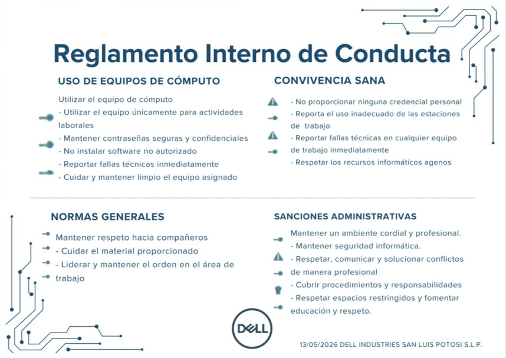
10.5 Conexión con la Mejora Continua del SGSI
Este incidente activa el ciclo de mejora continua (PDCA) del SGSI en los siguientes aspectos:
• Planificar (P): Se actualiza la evaluación de riesgos para elevar R-05 (cadena de suministro) a NR=25 y se añade el riesgo R-13 (Dependency Confusion) al registro.
• Hacer (D): Se implementan los controles adicionales identificados en la Sección 10.3 (allowlist, hash verification, Socket Security).
• Verificar (C): Se programa una auditoría de seguimiento específica para el control de dependencias en agosto de 2026, verificando la efectividad de los nuevos controles.
• Actuar (A): Los controles validados se incorporan formalmente a la Política P-02 (S-SDLC) y se documenta la lección aprendida en el registro del SGSI para futuras evaluaciones de riesgo.
La lección aprendida de este incidente refuerza la importancia de la política P-02, la necesidad de controles automáticos en el pipeline CI/CD y la cultura de reporte inmediato de anomalías. El incidente se cierra formalmente con el Acta de Cierre de Incidente (ACI-2026-003) firmada por el CISO el 10 de junio de 2026.